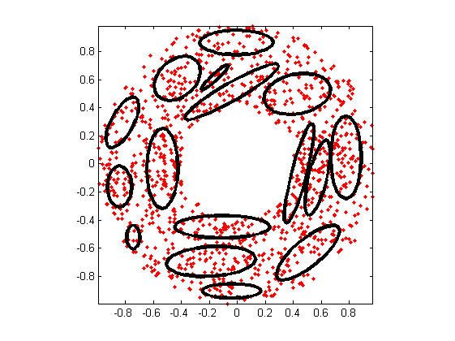
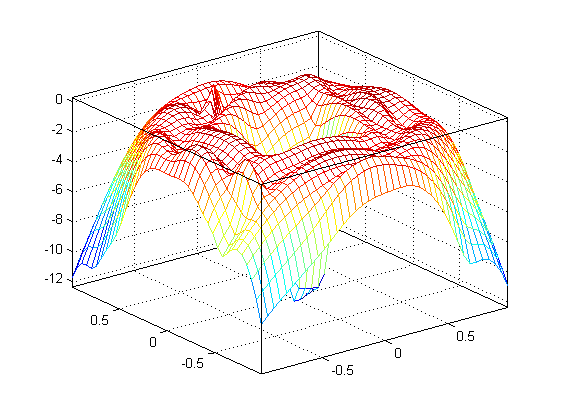
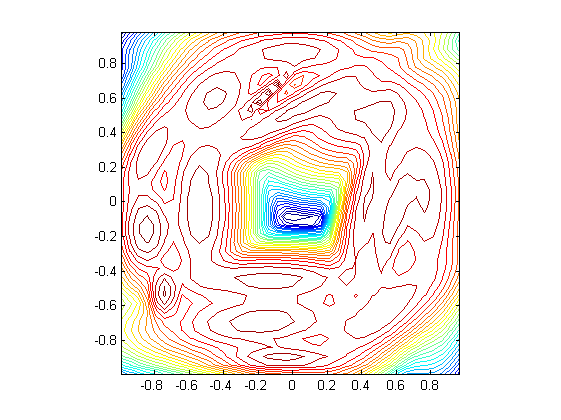

gmmGrow
Increase no. of gaussian components within a GMM
Contents
Syntax
- gmmPrm=gmmGrow(gmmPrm, targetGaussianNum)
Description
gmmPrm=gmmGrow(gmmPrm, targetGaussianNum) performs center splitting until the target no. of Gaussian components is reached.
The target number of Gaussian components should be less than or equal to the original number of Gaussian components.
Example
gmmGrowDemo
Start KMEANS to find the initial mean vectors... GMM iteration: 0/500, log likelihood. = -2093.897155 GMM iteration: 1/500, log likelihood. = -1865.485071 GMM iteration: 2/500, log likelihood. = -1865.485071 GMM total iteration count = 3, log likelihood. = -1865.485071 Start KMEANS to find the initial mean vectors... GMM iteration: 0/500, log likelihood. = -1934.767483 GMM iteration: 1/500, log likelihood. = -1884.289495 GMM iteration: 2/500, log likelihood. = -1871.911539 GMM iteration: 3/500, log likelihood. = -1865.625191 GMM iteration: 4/500, log likelihood. = -1860.594491 GMM iteration: 5/500, log likelihood. = -1855.028617 GMM iteration: 6/500, log likelihood. = -1847.752919 GMM iteration: 7/500, log likelihood. = -1837.712788 GMM iteration: 8/500, log likelihood. = -1824.178414 GMM iteration: 9/500, log likelihood. = -1807.821602 GMM iteration: 10/500, log likelihood. = -1792.075936 GMM iteration: 11/500, log likelihood. = -1781.483069 GMM iteration: 12/500, log likelihood. = -1776.861469 GMM iteration: 13/500, log likelihood. = -1775.499477 GMM iteration: 14/500, log likelihood. = -1775.190185 GMM iteration: 15/500, log likelihood. = -1775.126182 GMM iteration: 16/500, log likelihood. = -1775.110212 GMM iteration: 17/500, log likelihood. = -1775.102766 GMM iteration: 18/500, log likelihood. = -1775.096600 GMM iteration: 19/500, log likelihood. = -1775.090427 GMM iteration: 20/500, log likelihood. = -1775.084011 GMM iteration: 21/500, log likelihood. = -1775.077302 GMM iteration: 22/500, log likelihood. = -1775.070276 GMM iteration: 23/500, log likelihood. = -1775.062918 GMM iteration: 24/500, log likelihood. = -1775.055211 GMM iteration: 25/500, log likelihood. = -1775.047138 GMM iteration: 26/500, log likelihood. = -1775.038681 GMM iteration: 27/500, log likelihood. = -1775.029822 GMM iteration: 28/500, log likelihood. = -1775.020541 GMM iteration: 29/500, log likelihood. = -1775.010818 GMM iteration: 30/500, log likelihood. = -1775.000631 GMM iteration: 31/500, log likelihood. = -1774.989957 GMM iteration: 32/500, log likelihood. = -1774.978773 GMM iteration: 33/500, log likelihood. = -1774.967053 GMM iteration: 34/500, log likelihood. = -1774.954772 GMM iteration: 35/500, log likelihood. = -1774.941902 GMM iteration: 36/500, log likelihood. = -1774.928414 GMM iteration: 37/500, log likelihood. = -1774.914277 GMM iteration: 38/500, log likelihood. = -1774.899461 GMM iteration: 39/500, log likelihood. = -1774.883931 GMM iteration: 40/500, log likelihood. = -1774.867653 GMM iteration: 41/500, log likelihood. = -1774.850589 GMM iteration: 42/500, log likelihood. = -1774.832702 GMM iteration: 43/500, log likelihood. = -1774.813950 GMM iteration: 44/500, log likelihood. = -1774.794292 GMM iteration: 45/500, log likelihood. = -1774.773682 GMM iteration: 46/500, log likelihood. = -1774.752074 GMM iteration: 47/500, log likelihood. = -1774.729420 GMM iteration: 48/500, log likelihood. = -1774.705667 GMM iteration: 49/500, log likelihood. = -1774.680762 GMM iteration: 50/500, log likelihood. = -1774.654649 GMM iteration: 51/500, log likelihood. = -1774.627269 GMM iteration: 52/500, log likelihood. = -1774.598560 GMM iteration: 53/500, log likelihood. = -1774.568458 GMM iteration: 54/500, log likelihood. = -1774.536896 GMM iteration: 55/500, log likelihood. = -1774.503803 GMM iteration: 56/500, log likelihood. = -1774.469106 GMM iteration: 57/500, log likelihood. = -1774.432728 GMM iteration: 58/500, log likelihood. = -1774.394591 GMM iteration: 59/500, log likelihood. = -1774.354610 GMM iteration: 60/500, log likelihood. = -1774.312701 GMM iteration: 61/500, log likelihood. = -1774.268773 GMM iteration: 62/500, log likelihood. = -1774.222735 GMM iteration: 63/500, log likelihood. = -1774.174490 GMM iteration: 64/500, log likelihood. = -1774.123941 GMM iteration: 65/500, log likelihood. = -1774.070889 GMM iteration: 66/500, log likelihood. = -1774.014732 GMM iteration: 67/500, log likelihood. = -1773.955015 GMM iteration: 68/500, log likelihood. = -1773.891424 GMM iteration: 69/500, log likelihood. = -1773.823695 GMM iteration: 70/500, log likelihood. = -1773.751583 GMM iteration: 71/500, log likelihood. = -1773.674851 GMM iteration: 72/500, log likelihood. = -1773.593267 GMM iteration: 73/500, log likelihood. = -1773.506603 GMM iteration: 74/500, log likelihood. = -1773.414637 GMM iteration: 75/500, log likelihood. = -1773.317154 GMM iteration: 76/500, log likelihood. = -1773.213953 GMM iteration: 77/500, log likelihood. = -1773.104846 GMM iteration: 78/500, log likelihood. = -1772.989667 GMM iteration: 79/500, log likelihood. = -1772.868276 GMM iteration: 80/500, log likelihood. = -1772.740566 GMM iteration: 81/500, log likelihood. = -1772.606466 GMM iteration: 82/500, log likelihood. = -1772.465950 GMM iteration: 83/500, log likelihood. = -1772.319046 GMM iteration: 84/500, log likelihood. = -1772.165839 GMM iteration: 85/500, log likelihood. = -1772.006479 GMM iteration: 86/500, log likelihood. = -1771.841188 GMM iteration: 87/500, log likelihood. = -1771.670268 GMM iteration: 88/500, log likelihood. = -1771.494101 GMM iteration: 89/500, log likelihood. = -1771.313155 GMM iteration: 90/500, log likelihood. = -1771.127985 GMM iteration: 91/500, log likelihood. = -1770.939231 GMM iteration: 92/500, log likelihood. = -1770.747617 GMM iteration: 93/500, log likelihood. = -1770.553941 GMM iteration: 94/500, log likelihood. = -1770.359069 GMM iteration: 95/500, log likelihood. = -1770.163920 GMM iteration: 96/500, log likelihood. = -1769.969452 GMM iteration: 97/500, log likelihood. = -1769.776644 GMM iteration: 98/500, log likelihood. = -1769.586478 GMM iteration: 99/500, log likelihood. = -1769.399916 GMM iteration: 100/500, log likelihood. = -1769.217879 GMM iteration: 101/500, log likelihood. = -1769.041230 GMM iteration: 102/500, log likelihood. = -1768.870754 GMM iteration: 103/500, log likelihood. = -1768.707139 GMM iteration: 104/500, log likelihood. = -1768.550968 GMM iteration: 105/500, log likelihood. = -1768.402711 GMM iteration: 106/500, log likelihood. = -1768.262716 GMM iteration: 107/500, log likelihood. = -1768.131210 GMM iteration: 108/500, log likelihood. = -1768.008305 GMM iteration: 109/500, log likelihood. = -1767.894004 GMM iteration: 110/500, log likelihood. = -1767.788206 GMM iteration: 111/500, log likelihood. = -1767.690726 GMM iteration: 112/500, log likelihood. = -1767.601300 GMM iteration: 113/500, log likelihood. = -1767.519095 GMM iteration: 114/500, log likelihood. = -1767.443062 GMM iteration: 115/500, log likelihood. = -1767.372376 GMM iteration: 116/500, log likelihood. = -1767.306302 GMM iteration: 117/500, log likelihood. = -1767.244193 GMM iteration: 118/500, log likelihood. = -1767.185491 GMM iteration: 119/500, log likelihood. = -1767.129720 GMM iteration: 120/500, log likelihood. = -1767.076488 GMM iteration: 121/500, log likelihood. = -1767.025477 GMM iteration: 122/500, log likelihood. = -1766.976440 GMM iteration: 123/500, log likelihood. = -1766.929191 GMM iteration: 124/500, log likelihood. = -1766.883603 GMM iteration: 125/500, log likelihood. = -1766.839591 GMM iteration: 126/500, log likelihood. = -1766.797112 GMM iteration: 127/500, log likelihood. = -1766.756150 GMM iteration: 128/500, log likelihood. = -1766.716715 GMM iteration: 129/500, log likelihood. = -1766.678828 GMM iteration: 130/500, log likelihood. = -1766.642520 GMM iteration: 131/500, log likelihood. = -1766.607822 GMM iteration: 132/500, log likelihood. = -1766.574763 GMM iteration: 133/500, log likelihood. = -1766.543367 GMM iteration: 134/500, log likelihood. = -1766.513646 GMM iteration: 135/500, log likelihood. = -1766.485601 GMM iteration: 136/500, log likelihood. = -1766.459223 GMM iteration: 137/500, log likelihood. = -1766.434490 GMM iteration: 138/500, log likelihood. = -1766.411368 GMM iteration: 139/500, log likelihood. = -1766.389812 GMM iteration: 140/500, log likelihood. = -1766.369770 GMM iteration: 141/500, log likelihood. = -1766.351181 GMM iteration: 142/500, log likelihood. = -1766.333977 GMM iteration: 143/500, log likelihood. = -1766.318089 GMM iteration: 144/500, log likelihood. = -1766.303441 GMM iteration: 145/500, log likelihood. = -1766.289958 GMM iteration: 146/500, log likelihood. = -1766.277566 GMM iteration: 147/500, log likelihood. = -1766.266190 GMM iteration: 148/500, log likelihood. = -1766.255757 GMM iteration: 149/500, log likelihood. = -1766.246196 GMM iteration: 150/500, log likelihood. = -1766.237441 GMM iteration: 151/500, log likelihood. = -1766.229427 GMM iteration: 152/500, log likelihood. = -1766.222094 GMM iteration: 153/500, log likelihood. = -1766.215386 GMM iteration: 154/500, log likelihood. = -1766.209249 GMM iteration: 155/500, log likelihood. = -1766.203635 GMM iteration: 156/500, log likelihood. = -1766.198499 GMM iteration: 157/500, log likelihood. = -1766.193798 GMM iteration: 158/500, log likelihood. = -1766.189495 GMM iteration: 159/500, log likelihood. = -1766.185554 GMM iteration: 160/500, log likelihood. = -1766.181942 GMM iteration: 161/500, log likelihood. = -1766.178631 GMM iteration: 162/500, log likelihood. = -1766.175595 GMM iteration: 163/500, log likelihood. = -1766.172807 GMM iteration: 164/500, log likelihood. = -1766.170247 GMM iteration: 165/500, log likelihood. = -1766.167894 GMM iteration: 166/500, log likelihood. = -1766.165730 GMM iteration: 167/500, log likelihood. = -1766.163738 GMM iteration: 168/500, log likelihood. = -1766.161904 GMM iteration: 169/500, log likelihood. = -1766.160214 GMM iteration: 170/500, log likelihood. = -1766.158655 GMM iteration: 171/500, log likelihood. = -1766.157216 GMM iteration: 172/500, log likelihood. = -1766.155887 GMM iteration: 173/500, log likelihood. = -1766.154659 GMM iteration: 174/500, log likelihood. = -1766.153523 GMM iteration: 175/500, log likelihood. = -1766.152472 GMM iteration: 176/500, log likelihood. = -1766.151498 GMM iteration: 177/500, log likelihood. = -1766.150596 GMM iteration: 178/500, log likelihood. = -1766.149760 GMM iteration: 179/500, log likelihood. = -1766.148984 GMM iteration: 180/500, log likelihood. = -1766.148264 GMM iteration: 181/500, log likelihood. = -1766.147595 GMM iteration: 182/500, log likelihood. = -1766.146973 GMM iteration: 183/500, log likelihood. = -1766.146395 GMM iteration: 184/500, log likelihood. = -1766.145858 GMM iteration: 185/500, log likelihood. = -1766.145358 GMM iteration: 186/500, log likelihood. = -1766.144892 GMM iteration: 187/500, log likelihood. = -1766.144458 GMM iteration: 188/500, log likelihood. = -1766.144053 GMM iteration: 189/500, log likelihood. = -1766.143676 GMM iteration: 190/500, log likelihood. = -1766.143325 GMM iteration: 191/500, log likelihood. = -1766.142997 GMM iteration: 192/500, log likelihood. = -1766.142691 GMM iteration: 193/500, log likelihood. = -1766.142405 GMM iteration: 194/500, log likelihood. = -1766.142138 GMM iteration: 195/500, log likelihood. = -1766.141888 GMM iteration: 196/500, log likelihood. = -1766.141655 GMM iteration: 197/500, log likelihood. = -1766.141437 GMM iteration: 198/500, log likelihood. = -1766.141234 GMM iteration: 199/500, log likelihood. = -1766.141043 GMM iteration: 200/500, log likelihood. = -1766.140865 GMM iteration: 201/500, log likelihood. = -1766.140698 GMM iteration: 202/500, log likelihood. = -1766.140542 GMM iteration: 203/500, log likelihood. = -1766.140395 GMM iteration: 204/500, log likelihood. = -1766.140258 GMM iteration: 205/500, log likelihood. = -1766.140130 GMM iteration: 206/500, log likelihood. = -1766.140010 GMM iteration: 207/500, log likelihood. = -1766.139897 GMM iteration: 208/500, log likelihood. = -1766.139791 GMM iteration: 209/500, log likelihood. = -1766.139692 GMM iteration: 210/500, log likelihood. = -1766.139600 GMM iteration: 211/500, log likelihood. = -1766.139513 GMM iteration: 212/500, log likelihood. = -1766.139431 GMM iteration: 213/500, log likelihood. = -1766.139354 GMM iteration: 214/500, log likelihood. = -1766.139282 GMM iteration: 215/500, log likelihood. = -1766.139215 GMM iteration: 216/500, log likelihood. = -1766.139152 GMM iteration: 217/500, log likelihood. = -1766.139092 GMM iteration: 218/500, log likelihood. = -1766.139036 GMM iteration: 219/500, log likelihood. = -1766.138984 GMM iteration: 220/500, log likelihood. = -1766.138935 GMM iteration: 221/500, log likelihood. = -1766.138889 GMM iteration: 222/500, log likelihood. = -1766.138845 GMM iteration: 223/500, log likelihood. = -1766.138805 GMM iteration: 224/500, log likelihood. = -1766.138766 GMM iteration: 225/500, log likelihood. = -1766.138730 GMM iteration: 226/500, log likelihood. = -1766.138696 GMM iteration: 227/500, log likelihood. = -1766.138665 GMM iteration: 228/500, log likelihood. = -1766.138635 GMM iteration: 229/500, log likelihood. = -1766.138607 GMM iteration: 230/500, log likelihood. = -1766.138580 GMM iteration: 231/500, log likelihood. = -1766.138556 GMM iteration: 232/500, log likelihood. = -1766.138532 GMM iteration: 233/500, log likelihood. = -1766.138510 GMM iteration: 234/500, log likelihood. = -1766.138490 GMM iteration: 235/500, log likelihood. = -1766.138470 GMM iteration: 236/500, log likelihood. = -1766.138452 GMM iteration: 237/500, log likelihood. = -1766.138435 GMM iteration: 238/500, log likelihood. = -1766.138419 GMM iteration: 239/500, log likelihood. = -1766.138404 GMM iteration: 240/500, log likelihood. = -1766.138389 GMM iteration: 241/500, log likelihood. = -1766.138376 GMM iteration: 242/500, log likelihood. = -1766.138363 GMM iteration: 243/500, log likelihood. = -1766.138351 GMM iteration: 244/500, log likelihood. = -1766.138340 GMM iteration: 245/500, log likelihood. = -1766.138330 GMM iteration: 246/500, log likelihood. = -1766.138320 GMM iteration: 247/500, log likelihood. = -1766.138310 GMM iteration: 248/500, log likelihood. = -1766.138302 GMM iteration: 249/500, log likelihood. = -1766.138293 GMM iteration: 250/500, log likelihood. = -1766.138285 GMM iteration: 251/500, log likelihood. = -1766.138278 GMM iteration: 252/500, log likelihood. = -1766.138271 GMM iteration: 253/500, log likelihood. = -1766.138265 GMM iteration: 254/500, log likelihood. = -1766.138259 GMM iteration: 255/500, log likelihood. = -1766.138253 GMM iteration: 256/500, log likelihood. = -1766.138247 GMM iteration: 257/500, log likelihood. = -1766.138242 GMM iteration: 258/500, log likelihood. = -1766.138238 GMM iteration: 259/500, log likelihood. = -1766.138233 GMM iteration: 260/500, log likelihood. = -1766.138229 GMM iteration: 261/500, log likelihood. = -1766.138225 GMM iteration: 262/500, log likelihood. = -1766.138221 GMM iteration: 263/500, log likelihood. = -1766.138217 GMM iteration: 264/500, log likelihood. = -1766.138214 GMM iteration: 265/500, log likelihood. = -1766.138211 GMM iteration: 266/500, log likelihood. = -1766.138208 GMM iteration: 267/500, log likelihood. = -1766.138205 GMM iteration: 268/500, log likelihood. = -1766.138203 GMM iteration: 269/500, log likelihood. = -1766.138200 GMM iteration: 270/500, log likelihood. = -1766.138198 GMM iteration: 271/500, log likelihood. = -1766.138195 GMM iteration: 272/500, log likelihood. = -1766.138193 GMM iteration: 273/500, log likelihood. = -1766.138191 GMM iteration: 274/500, log likelihood. = -1766.138190 GMM iteration: 275/500, log likelihood. = -1766.138188 GMM iteration: 276/500, log likelihood. = -1766.138186 GMM iteration: 277/500, log likelihood. = -1766.138185 GMM iteration: 278/500, log likelihood. = -1766.138183 GMM iteration: 279/500, log likelihood. = -1766.138182 GMM iteration: 280/500, log likelihood. = -1766.138181 GMM iteration: 281/500, log likelihood. = -1766.138179 GMM iteration: 282/500, log likelihood. = -1766.138178 GMM iteration: 283/500, log likelihood. = -1766.138177 GMM iteration: 284/500, log likelihood. = -1766.138176 GMM iteration: 285/500, log likelihood. = -1766.138175 GMM iteration: 286/500, log likelihood. = -1766.138174 GMM iteration: 287/500, log likelihood. = -1766.138173 GMM iteration: 288/500, log likelihood. = -1766.138173 GMM iteration: 289/500, log likelihood. = -1766.138172 GMM iteration: 290/500, log likelihood. = -1766.138171 GMM iteration: 291/500, log likelihood. = -1766.138170 GMM iteration: 292/500, log likelihood. = -1766.138170 GMM iteration: 293/500, log likelihood. = -1766.138169 GMM iteration: 294/500, log likelihood. = -1766.138169 GMM iteration: 295/500, log likelihood. = -1766.138168 GMM iteration: 296/500, log likelihood. = -1766.138168 GMM iteration: 297/500, log likelihood. = -1766.138167 GMM iteration: 298/500, log likelihood. = -1766.138167 GMM iteration: 299/500, log likelihood. = -1766.138166 GMM iteration: 300/500, log likelihood. = -1766.138166 GMM iteration: 301/500, log likelihood. = -1766.138166 GMM iteration: 302/500, log likelihood. = -1766.138165 GMM iteration: 303/500, log likelihood. = -1766.138165 GMM iteration: 304/500, log likelihood. = -1766.138165 GMM iteration: 305/500, log likelihood. = -1766.138164 GMM iteration: 306/500, log likelihood. = -1766.138164 GMM iteration: 307/500, log likelihood. = -1766.138164 GMM iteration: 308/500, log likelihood. = -1766.138163 GMM iteration: 309/500, log likelihood. = -1766.138163 GMM iteration: 310/500, log likelihood. = -1766.138163 GMM iteration: 311/500, log likelihood. = -1766.138163 GMM iteration: 312/500, log likelihood. = -1766.138163 GMM iteration: 313/500, log likelihood. = -1766.138162 GMM iteration: 314/500, log likelihood. = -1766.138162 GMM iteration: 315/500, log likelihood. = -1766.138162 GMM iteration: 316/500, log likelihood. = -1766.138162 GMM iteration: 317/500, log likelihood. = -1766.138162 GMM iteration: 318/500, log likelihood. = -1766.138162 GMM iteration: 319/500, log likelihood. = -1766.138162 GMM iteration: 320/500, log likelihood. = -1766.138161 GMM iteration: 321/500, log likelihood. = -1766.138161 GMM iteration: 322/500, log likelihood. = -1766.138161 GMM iteration: 323/500, log likelihood. = -1766.138161 GMM iteration: 324/500, log likelihood. = -1766.138161 GMM iteration: 325/500, log likelihood. = -1766.138161 GMM iteration: 326/500, log likelihood. = -1766.138161 GMM iteration: 327/500, log likelihood. = -1766.138161 GMM iteration: 328/500, log likelihood. = -1766.138161 GMM iteration: 329/500, log likelihood. = -1766.138161 GMM iteration: 330/500, log likelihood. = -1766.138160 GMM iteration: 331/500, log likelihood. = -1766.138160 GMM iteration: 332/500, log likelihood. = -1766.138160 GMM iteration: 333/500, log likelihood. = -1766.138160 GMM iteration: 334/500, log likelihood. = -1766.138160 GMM iteration: 335/500, log likelihood. = -1766.138160 GMM iteration: 336/500, log likelihood. = -1766.138160 GMM iteration: 337/500, log likelihood. = -1766.138160 GMM iteration: 338/500, log likelihood. = -1766.138160 GMM iteration: 339/500, log likelihood. = -1766.138160 GMM iteration: 340/500, log likelihood. = -1766.138160 GMM iteration: 341/500, log likelihood. = -1766.138160 GMM iteration: 342/500, log likelihood. = -1766.138160 GMM iteration: 343/500, log likelihood. = -1766.138160 GMM iteration: 344/500, log likelihood. = -1766.138160 GMM iteration: 345/500, log likelihood. = -1766.138160 GMM iteration: 346/500, log likelihood. = -1766.138160 GMM iteration: 347/500, log likelihood. = -1766.138160 GMM iteration: 348/500, log likelihood. = -1766.138160 GMM iteration: 349/500, log likelihood. = -1766.138160 GMM iteration: 350/500, log likelihood. = -1766.138160 GMM iteration: 351/500, log likelihood. = -1766.138160 GMM iteration: 352/500, log likelihood. = -1766.138160 GMM iteration: 353/500, log likelihood. = -1766.138160 GMM iteration: 354/500, log likelihood. = -1766.138160 GMM iteration: 355/500, log likelihood. = -1766.138160 GMM iteration: 356/500, log likelihood. = -1766.138160 GMM iteration: 357/500, log likelihood. = -1766.138160 GMM iteration: 358/500, log likelihood. = -1766.138160 GMM iteration: 359/500, log likelihood. = -1766.138160 GMM iteration: 360/500, log likelihood. = -1766.138160 GMM iteration: 361/500, log likelihood. = -1766.138160 GMM iteration: 362/500, log likelihood. = -1766.138160 GMM iteration: 363/500, log likelihood. = -1766.138160 GMM iteration: 364/500, log likelihood. = -1766.138160 GMM iteration: 365/500, log likelihood. = -1766.138160 GMM iteration: 366/500, log likelihood. = -1766.138160 GMM iteration: 367/500, log likelihood. = -1766.138160 GMM iteration: 368/500, log likelihood. = -1766.138160 GMM iteration: 369/500, log likelihood. = -1766.138160 GMM iteration: 370/500, log likelihood. = -1766.138159 GMM iteration: 371/500, log likelihood. = -1766.138159 GMM iteration: 372/500, log likelihood. = -1766.138159 GMM iteration: 373/500, log likelihood. = -1766.138159 GMM iteration: 374/500, log likelihood. = -1766.138159 GMM iteration: 375/500, log likelihood. = -1766.138159 GMM iteration: 376/500, log likelihood. = -1766.138159 GMM iteration: 377/500, log likelihood. = -1766.138159 GMM iteration: 378/500, log likelihood. = -1766.138159 GMM iteration: 379/500, log likelihood. = -1766.138159 GMM iteration: 380/500, log likelihood. = -1766.138159 GMM iteration: 381/500, log likelihood. = -1766.138159 GMM iteration: 382/500, log likelihood. = -1766.138159 GMM iteration: 383/500, log likelihood. = -1766.138159 GMM iteration: 384/500, log likelihood. = -1766.138159 GMM iteration: 385/500, log likelihood. = -1766.138159 GMM iteration: 386/500, log likelihood. = -1766.138159 GMM iteration: 387/500, log likelihood. = -1766.138159 GMM iteration: 388/500, log likelihood. = -1766.138159 GMM iteration: 389/500, log likelihood. = -1766.138159 GMM iteration: 390/500, log likelihood. = -1766.138159 GMM iteration: 391/500, log likelihood. = -1766.138159 GMM iteration: 392/500, log likelihood. = -1766.138159 GMM iteration: 393/500, log likelihood. = -1766.138159 GMM iteration: 394/500, log likelihood. = -1766.138159 GMM iteration: 395/500, log likelihood. = -1766.138159 GMM iteration: 396/500, log likelihood. = -1766.138159 GMM iteration: 397/500, log likelihood. = -1766.138159 GMM iteration: 398/500, log likelihood. = -1766.138159 GMM iteration: 399/500, log likelihood. = -1766.138159 GMM iteration: 400/500, log likelihood. = -1766.138159 GMM iteration: 401/500, log likelihood. = -1766.138159 GMM iteration: 402/500, log likelihood. = -1766.138159 GMM iteration: 403/500, log likelihood. = -1766.138159 GMM iteration: 404/500, log likelihood. = -1766.138159 GMM iteration: 405/500, log likelihood. = -1766.138159 GMM iteration: 406/500, log likelihood. = -1766.138159 GMM iteration: 407/500, log likelihood. = -1766.138159 GMM iteration: 408/500, log likelihood. = -1766.138159 GMM iteration: 409/500, log likelihood. = -1766.138159 GMM iteration: 410/500, log likelihood. = -1766.138159 GMM iteration: 411/500, log likelihood. = -1766.138159 GMM iteration: 412/500, log likelihood. = -1766.138159 GMM iteration: 413/500, log likelihood. = -1766.138159 GMM iteration: 414/500, log likelihood. = -1766.138159 GMM iteration: 415/500, log likelihood. = -1766.138159 GMM iteration: 416/500, log likelihood. = -1766.138159 GMM iteration: 417/500, log likelihood. = -1766.138159 GMM iteration: 418/500, log likelihood. = -1766.138159 GMM iteration: 419/500, log likelihood. = -1766.138159 GMM iteration: 420/500, log likelihood. = -1766.138159 GMM iteration: 421/500, log likelihood. = -1766.138159 GMM iteration: 422/500, log likelihood. = -1766.138159 GMM iteration: 423/500, log likelihood. = -1766.138159 GMM iteration: 424/500, log likelihood. = -1766.138159 GMM iteration: 425/500, log likelihood. = -1766.138159 GMM iteration: 426/500, log likelihood. = -1766.138159 GMM iteration: 427/500, log likelihood. = -1766.138159 GMM iteration: 428/500, log likelihood. = -1766.138159 GMM iteration: 429/500, log likelihood. = -1766.138159 GMM iteration: 430/500, log likelihood. = -1766.138159 GMM iteration: 431/500, log likelihood. = -1766.138159 GMM iteration: 432/500, log likelihood. = -1766.138159 GMM iteration: 433/500, log likelihood. = -1766.138159 GMM iteration: 434/500, log likelihood. = -1766.138159 GMM iteration: 435/500, log likelihood. = -1766.138159 GMM iteration: 436/500, log likelihood. = -1766.138159 GMM iteration: 437/500, log likelihood. = -1766.138159 GMM iteration: 438/500, log likelihood. = -1766.138159 GMM iteration: 439/500, log likelihood. = -1766.138159 GMM iteration: 440/500, log likelihood. = -1766.138159 GMM iteration: 441/500, log likelihood. = -1766.138159 GMM iteration: 442/500, log likelihood. = -1766.138159 GMM iteration: 443/500, log likelihood. = -1766.138159 GMM iteration: 444/500, log likelihood. = -1766.138159 GMM iteration: 445/500, log likelihood. = -1766.138159 GMM iteration: 446/500, log likelihood. = -1766.138159 GMM iteration: 447/500, log likelihood. = -1766.138159 GMM iteration: 448/500, log likelihood. = -1766.138159 GMM iteration: 449/500, log likelihood. = -1766.138159 GMM iteration: 450/500, log likelihood. = -1766.138159 GMM iteration: 451/500, log likelihood. = -1766.138159 GMM iteration: 452/500, log likelihood. = -1766.138159 GMM iteration: 453/500, log likelihood. = -1766.138159 GMM iteration: 454/500, log likelihood. = -1766.138159 GMM iteration: 455/500, log likelihood. = -1766.138159 GMM iteration: 456/500, log likelihood. = -1766.138159 GMM iteration: 457/500, log likelihood. = -1766.138159 GMM iteration: 458/500, log likelihood. = -1766.138159 GMM iteration: 459/500, log likelihood. = -1766.138159 GMM iteration: 460/500, log likelihood. = -1766.138159 GMM iteration: 461/500, log likelihood. = -1766.138159 GMM iteration: 462/500, log likelihood. = -1766.138159 GMM iteration: 463/500, log likelihood. = -1766.138159 GMM iteration: 464/500, log likelihood. = -1766.138159 GMM iteration: 465/500, log likelihood. = -1766.138159 GMM iteration: 466/500, log likelihood. = -1766.138159 GMM iteration: 467/500, log likelihood. = -1766.138159 GMM iteration: 468/500, log likelihood. = -1766.138159 GMM iteration: 469/500, log likelihood. = -1766.138159 GMM iteration: 470/500, log likelihood. = -1766.138159 GMM iteration: 471/500, log likelihood. = -1766.138159 GMM iteration: 472/500, log likelihood. = -1766.138159 GMM iteration: 473/500, log likelihood. = -1766.138159 GMM iteration: 474/500, log likelihood. = -1766.138159 GMM iteration: 475/500, log likelihood. = -1766.138159 GMM iteration: 476/500, log likelihood. = -1766.138159 GMM iteration: 477/500, log likelihood. = -1766.138159 GMM iteration: 478/500, log likelihood. = -1766.138159 GMM iteration: 479/500, log likelihood. = -1766.138159 GMM iteration: 480/500, log likelihood. = -1766.138159 GMM iteration: 481/500, log likelihood. = -1766.138159 GMM iteration: 482/500, log likelihood. = -1766.138159 GMM iteration: 483/500, log likelihood. = -1766.138159 GMM iteration: 484/500, log likelihood. = -1766.138159 GMM iteration: 485/500, log likelihood. = -1766.138159 GMM iteration: 486/500, log likelihood. = -1766.138159 GMM iteration: 487/500, log likelihood. = -1766.138159 GMM iteration: 488/500, log likelihood. = -1766.138159 GMM iteration: 489/500, log likelihood. = -1766.138159 GMM iteration: 490/500, log likelihood. = -1766.138159 GMM iteration: 491/500, log likelihood. = -1766.138159 GMM iteration: 492/500, log likelihood. = -1766.138159 GMM total iteration count = 493, log likelihood. = -1766.138159 Start KMEANS to find the initial mean vectors... GMM iteration: 0/500, log likelihood. = -2053.101106 GMM iteration: 1/500, log likelihood. = -1765.604132 GMM iteration: 2/500, log likelihood. = -1676.116537 GMM iteration: 3/500, log likelihood. = -1561.793980 GMM iteration: 4/500, log likelihood. = -1454.809175 GMM iteration: 5/500, log likelihood. = -1395.781807 GMM iteration: 6/500, log likelihood. = -1379.808082 GMM iteration: 7/500, log likelihood. = -1377.128140 GMM iteration: 8/500, log likelihood. = -1376.639849 GMM iteration: 9/500, log likelihood. = -1376.459180 GMM iteration: 10/500, log likelihood. = -1376.339027 GMM iteration: 11/500, log likelihood. = -1376.243221 GMM iteration: 12/500, log likelihood. = -1376.162968 GMM iteration: 13/500, log likelihood. = -1376.094233 GMM iteration: 14/500, log likelihood. = -1376.034467 GMM iteration: 15/500, log likelihood. = -1375.984410 GMM iteration: 16/500, log likelihood. = -1375.947933 GMM iteration: 17/500, log likelihood. = -1375.920280 GMM iteration: 18/500, log likelihood. = -1375.898691 GMM iteration: 19/500, log likelihood. = -1375.881414 GMM iteration: 20/500, log likelihood. = -1375.867296 GMM iteration: 21/500, log likelihood. = -1375.855557 GMM iteration: 22/500, log likelihood. = -1375.845662 GMM iteration: 23/500, log likelihood. = -1375.837230 GMM iteration: 24/500, log likelihood. = -1375.829982 GMM iteration: 25/500, log likelihood. = -1375.823713 GMM iteration: 26/500, log likelihood. = -1375.818261 GMM iteration: 27/500, log likelihood. = -1375.813501 GMM iteration: 28/500, log likelihood. = -1375.809333 GMM iteration: 29/500, log likelihood. = -1375.805673 GMM iteration: 30/500, log likelihood. = -1375.802452 GMM iteration: 31/500, log likelihood. = -1375.799614 GMM iteration: 32/500, log likelihood. = -1375.797109 GMM iteration: 33/500, log likelihood. = -1375.794896 GMM iteration: 34/500, log likelihood. = -1375.792938 GMM iteration: 35/500, log likelihood. = -1375.791205 GMM iteration: 36/500, log likelihood. = -1375.789669 GMM iteration: 37/500, log likelihood. = -1375.788308 GMM iteration: 38/500, log likelihood. = -1375.787100 GMM iteration: 39/500, log likelihood. = -1375.786028 GMM iteration: 40/500, log likelihood. = -1375.785075 GMM iteration: 41/500, log likelihood. = -1375.784229 GMM iteration: 42/500, log likelihood. = -1375.783477 GMM iteration: 43/500, log likelihood. = -1375.782809 GMM iteration: 44/500, log likelihood. = -1375.782214 GMM iteration: 45/500, log likelihood. = -1375.781685 GMM iteration: 46/500, log likelihood. = -1375.781214 GMM iteration: 47/500, log likelihood. = -1375.780795 GMM iteration: 48/500, log likelihood. = -1375.780421 GMM iteration: 49/500, log likelihood. = -1375.780089 GMM iteration: 50/500, log likelihood. = -1375.779793 GMM iteration: 51/500, log likelihood. = -1375.779529 GMM iteration: 52/500, log likelihood. = -1375.779294 GMM iteration: 53/500, log likelihood. = -1375.779084 GMM iteration: 54/500, log likelihood. = -1375.778897 GMM iteration: 55/500, log likelihood. = -1375.778731 GMM iteration: 56/500, log likelihood. = -1375.778582 GMM iteration: 57/500, log likelihood. = -1375.778450 GMM iteration: 58/500, log likelihood. = -1375.778332 GMM iteration: 59/500, log likelihood. = -1375.778227 GMM iteration: 60/500, log likelihood. = -1375.778133 GMM iteration: 61/500, log likelihood. = -1375.778049 GMM iteration: 62/500, log likelihood. = -1375.777974 GMM iteration: 63/500, log likelihood. = -1375.777907 GMM iteration: 64/500, log likelihood. = -1375.777848 GMM iteration: 65/500, log likelihood. = -1375.777795 GMM iteration: 66/500, log likelihood. = -1375.777747 GMM iteration: 67/500, log likelihood. = -1375.777705 GMM iteration: 68/500, log likelihood. = -1375.777667 GMM iteration: 69/500, log likelihood. = -1375.777634 GMM iteration: 70/500, log likelihood. = -1375.777603 GMM iteration: 71/500, log likelihood. = -1375.777577 GMM iteration: 72/500, log likelihood. = -1375.777553 GMM iteration: 73/500, log likelihood. = -1375.777531 GMM iteration: 74/500, log likelihood. = -1375.777512 GMM iteration: 75/500, log likelihood. = -1375.777495 GMM iteration: 76/500, log likelihood. = -1375.777480 GMM iteration: 77/500, log likelihood. = -1375.777466 GMM iteration: 78/500, log likelihood. = -1375.777454 GMM iteration: 79/500, log likelihood. = -1375.777443 GMM iteration: 80/500, log likelihood. = -1375.777434 GMM iteration: 81/500, log likelihood. = -1375.777425 GMM iteration: 82/500, log likelihood. = -1375.777417 GMM iteration: 83/500, log likelihood. = -1375.777410 GMM iteration: 84/500, log likelihood. = -1375.777404 GMM iteration: 85/500, log likelihood. = -1375.777399 GMM iteration: 86/500, log likelihood. = -1375.777394 GMM iteration: 87/500, log likelihood. = -1375.777389 GMM iteration: 88/500, log likelihood. = -1375.777386 GMM iteration: 89/500, log likelihood. = -1375.777382 GMM iteration: 90/500, log likelihood. = -1375.777379 GMM iteration: 91/500, log likelihood. = -1375.777376 GMM iteration: 92/500, log likelihood. = -1375.777374 GMM iteration: 93/500, log likelihood. = -1375.777371 GMM iteration: 94/500, log likelihood. = -1375.777369 GMM iteration: 95/500, log likelihood. = -1375.777368 GMM iteration: 96/500, log likelihood. = -1375.777366 GMM iteration: 97/500, log likelihood. = -1375.777365 GMM iteration: 98/500, log likelihood. = -1375.777363 GMM iteration: 99/500, log likelihood. = -1375.777362 GMM iteration: 100/500, log likelihood. = -1375.777361 GMM iteration: 101/500, log likelihood. = -1375.777360 GMM iteration: 102/500, log likelihood. = -1375.777360 GMM iteration: 103/500, log likelihood. = -1375.777359 GMM iteration: 104/500, log likelihood. = -1375.777358 GMM iteration: 105/500, log likelihood. = -1375.777358 GMM iteration: 106/500, log likelihood. = -1375.777357 GMM iteration: 107/500, log likelihood. = -1375.777357 GMM iteration: 108/500, log likelihood. = -1375.777356 GMM iteration: 109/500, log likelihood. = -1375.777356 GMM iteration: 110/500, log likelihood. = -1375.777356 GMM iteration: 111/500, log likelihood. = -1375.777355 GMM iteration: 112/500, log likelihood. = -1375.777355 GMM iteration: 113/500, log likelihood. = -1375.777355 GMM iteration: 114/500, log likelihood. = -1375.777355 GMM iteration: 115/500, log likelihood. = -1375.777354 GMM iteration: 116/500, log likelihood. = -1375.777354 GMM iteration: 117/500, log likelihood. = -1375.777354 GMM iteration: 118/500, log likelihood. = -1375.777354 GMM iteration: 119/500, log likelihood. = -1375.777354 GMM iteration: 120/500, log likelihood. = -1375.777354 GMM iteration: 121/500, log likelihood. = -1375.777354 GMM iteration: 122/500, log likelihood. = -1375.777354 GMM iteration: 123/500, log likelihood. = -1375.777353 GMM iteration: 124/500, log likelihood. = -1375.777353 GMM iteration: 125/500, log likelihood. = -1375.777353 GMM iteration: 126/500, log likelihood. = -1375.777353 GMM iteration: 127/500, log likelihood. = -1375.777353 GMM iteration: 128/500, log likelihood. = -1375.777353 GMM iteration: 129/500, log likelihood. = -1375.777353 GMM iteration: 130/500, log likelihood. = -1375.777353 GMM iteration: 131/500, log likelihood. = -1375.777353 GMM iteration: 132/500, log likelihood. = -1375.777353 GMM iteration: 133/500, log likelihood. = -1375.777353 GMM iteration: 134/500, log likelihood. = -1375.777353 GMM iteration: 135/500, log likelihood. = -1375.777353 GMM iteration: 136/500, log likelihood. = -1375.777353 GMM iteration: 137/500, log likelihood. = -1375.777353 GMM iteration: 138/500, log likelihood. = -1375.777353 GMM iteration: 139/500, log likelihood. = -1375.777353 GMM iteration: 140/500, log likelihood. = -1375.777353 GMM iteration: 141/500, log likelihood. = -1375.777353 GMM iteration: 142/500, log likelihood. = -1375.777353 GMM iteration: 143/500, log likelihood. = -1375.777353 GMM iteration: 144/500, log likelihood. = -1375.777353 GMM iteration: 145/500, log likelihood. = -1375.777353 GMM iteration: 146/500, log likelihood. = -1375.777353 GMM iteration: 147/500, log likelihood. = -1375.777353 GMM iteration: 148/500, log likelihood. = -1375.777353 GMM iteration: 149/500, log likelihood. = -1375.777353 GMM iteration: 150/500, log likelihood. = -1375.777353 GMM iteration: 151/500, log likelihood. = -1375.777353 GMM iteration: 152/500, log likelihood. = -1375.777353 GMM iteration: 153/500, log likelihood. = -1375.777353 GMM iteration: 154/500, log likelihood. = -1375.777353 GMM iteration: 155/500, log likelihood. = -1375.777353 GMM iteration: 156/500, log likelihood. = -1375.777353 GMM iteration: 157/500, log likelihood. = -1375.777353 GMM iteration: 158/500, log likelihood. = -1375.777353 GMM iteration: 159/500, log likelihood. = -1375.777353 GMM iteration: 160/500, log likelihood. = -1375.777353 GMM iteration: 161/500, log likelihood. = -1375.777353 GMM iteration: 162/500, log likelihood. = -1375.777353 GMM iteration: 163/500, log likelihood. = -1375.777353 GMM iteration: 164/500, log likelihood. = -1375.777353 GMM iteration: 165/500, log likelihood. = -1375.777353 GMM iteration: 166/500, log likelihood. = -1375.777353 GMM iteration: 167/500, log likelihood. = -1375.777353 GMM iteration: 168/500, log likelihood. = -1375.777353 GMM iteration: 169/500, log likelihood. = -1375.777353 GMM iteration: 170/500, log likelihood. = -1375.777353 GMM iteration: 171/500, log likelihood. = -1375.777353 GMM iteration: 172/500, log likelihood. = -1375.777353 GMM iteration: 173/500, log likelihood. = -1375.777353 GMM iteration: 174/500, log likelihood. = -1375.777353 GMM iteration: 175/500, log likelihood. = -1375.777353 GMM iteration: 176/500, log likelihood. = -1375.777353 GMM iteration: 177/500, log likelihood. = -1375.777353 GMM iteration: 178/500, log likelihood. = -1375.777353 GMM iteration: 179/500, log likelihood. = -1375.777353 GMM iteration: 180/500, log likelihood. = -1375.777353 GMM iteration: 181/500, log likelihood. = -1375.777353 GMM iteration: 182/500, log likelihood. = -1375.777353 GMM iteration: 183/500, log likelihood. = -1375.777353 GMM iteration: 184/500, log likelihood. = -1375.777353 GMM iteration: 185/500, log likelihood. = -1375.777353 GMM iteration: 186/500, log likelihood. = -1375.777353 GMM iteration: 187/500, log likelihood. = -1375.777353 GMM iteration: 188/500, log likelihood. = -1375.777353 GMM iteration: 189/500, log likelihood. = -1375.777353 GMM iteration: 190/500, log likelihood. = -1375.777353 GMM iteration: 191/500, log likelihood. = -1375.777353 GMM iteration: 192/500, log likelihood. = -1375.777353 GMM iteration: 193/500, log likelihood. = -1375.777353 GMM iteration: 194/500, log likelihood. = -1375.777353 GMM iteration: 195/500, log likelihood. = -1375.777353 GMM iteration: 196/500, log likelihood. = -1375.777353 GMM iteration: 197/500, log likelihood. = -1375.777353 GMM iteration: 198/500, log likelihood. = -1375.777353 GMM iteration: 199/500, log likelihood. = -1375.777353 GMM iteration: 200/500, log likelihood. = -1375.777353 GMM iteration: 201/500, log likelihood. = -1375.777353 GMM iteration: 202/500, log likelihood. = -1375.777353 GMM iteration: 203/500, log likelihood. = -1375.777353 GMM iteration: 204/500, log likelihood. = -1375.777353 GMM iteration: 205/500, log likelihood. = -1375.777353 GMM iteration: 206/500, log likelihood. = -1375.777353 GMM iteration: 207/500, log likelihood. = -1375.777353 GMM iteration: 208/500, log likelihood. = -1375.777353 GMM iteration: 209/500, log likelihood. = -1375.777353 GMM iteration: 210/500, log likelihood. = -1375.777353 GMM iteration: 211/500, log likelihood. = -1375.777353 GMM iteration: 212/500, log likelihood. = -1375.777353 GMM iteration: 213/500, log likelihood. = -1375.777353 GMM iteration: 214/500, log likelihood. = -1375.777353 GMM iteration: 215/500, log likelihood. = -1375.777353 GMM iteration: 216/500, log likelihood. = -1375.777353 GMM iteration: 217/500, log likelihood. = -1375.777353 GMM total iteration count = 218, log likelihood. = -1375.777353 Start KMEANS to find the initial mean vectors... GMM iteration: 0/500, log likelihood. = -2166.574313 GMM iteration: 1/500, log likelihood. = -1793.295465 GMM iteration: 2/500, log likelihood. = -1728.706614 GMM iteration: 3/500, log likelihood. = -1630.833592 GMM iteration: 4/500, log likelihood. = -1526.973995 GMM iteration: 5/500, log likelihood. = -1449.497824 GMM iteration: 6/500, log likelihood. = -1404.639893 GMM iteration: 7/500, log likelihood. = -1381.633044 GMM iteration: 8/500, log likelihood. = -1369.305298 GMM iteration: 9/500, log likelihood. = -1361.959431 GMM iteration: 10/500, log likelihood. = -1357.174503 GMM iteration: 11/500, log likelihood. = -1353.828125 GMM iteration: 12/500, log likelihood. = -1351.340758 GMM iteration: 13/500, log likelihood. = -1349.402456 GMM iteration: 14/500, log likelihood. = -1347.846227 GMM iteration: 15/500, log likelihood. = -1346.570834 GMM iteration: 16/500, log likelihood. = -1345.486914 GMM iteration: 17/500, log likelihood. = -1344.548142 GMM iteration: 18/500, log likelihood. = -1343.734217 GMM iteration: 19/500, log likelihood. = -1343.029902 GMM iteration: 20/500, log likelihood. = -1342.421174 GMM iteration: 21/500, log likelihood. = -1341.893853 GMM iteration: 22/500, log likelihood. = -1341.434388 GMM iteration: 23/500, log likelihood. = -1341.031063 GMM iteration: 24/500, log likelihood. = -1340.673548 GMM iteration: 25/500, log likelihood. = -1340.352717 GMM iteration: 26/500, log likelihood. = -1340.060509 GMM iteration: 27/500, log likelihood. = -1339.789753 GMM iteration: 28/500, log likelihood. = -1339.533995 GMM iteration: 29/500, log likelihood. = -1339.287320 GMM iteration: 30/500, log likelihood. = -1339.044179 GMM iteration: 31/500, log likelihood. = -1338.799212 GMM iteration: 32/500, log likelihood. = -1338.547055 GMM iteration: 33/500, log likelihood. = -1338.282120 GMM iteration: 34/500, log likelihood. = -1337.998348 GMM iteration: 35/500, log likelihood. = -1337.688930 GMM iteration: 36/500, log likelihood. = -1337.346014 GMM iteration: 37/500, log likelihood. = -1336.960423 GMM iteration: 38/500, log likelihood. = -1336.522226 GMM iteration: 39/500, log likelihood. = -1336.020220 GMM iteration: 40/500, log likelihood. = -1335.441139 GMM iteration: 41/500, log likelihood. = -1334.772397 GMM iteration: 42/500, log likelihood. = -1334.005082 GMM iteration: 43/500, log likelihood. = -1333.139280 GMM iteration: 44/500, log likelihood. = -1332.191252 GMM iteration: 45/500, log likelihood. = -1331.199596 GMM iteration: 46/500, log likelihood. = -1330.224412 GMM iteration: 47/500, log likelihood. = -1329.333875 GMM iteration: 48/500, log likelihood. = -1328.596092 GMM iteration: 49/500, log likelihood. = -1328.024748 GMM iteration: 50/500, log likelihood. = -1327.602658 GMM iteration: 51/500, log likelihood. = -1327.295763 GMM iteration: 52/500, log likelihood. = -1327.068373 GMM iteration: 53/500, log likelihood. = -1326.892071 GMM iteration: 54/500, log likelihood. = -1326.747352 GMM iteration: 55/500, log likelihood. = -1326.621781 GMM iteration: 56/500, log likelihood. = -1326.507586 GMM iteration: 57/500, log likelihood. = -1326.399795 GMM iteration: 58/500, log likelihood. = -1326.295042 GMM iteration: 59/500, log likelihood. = -1326.190857 GMM iteration: 60/500, log likelihood. = -1326.085245 GMM iteration: 61/500, log likelihood. = -1325.976433 GMM iteration: 62/500, log likelihood. = -1325.862713 GMM iteration: 63/500, log likelihood. = -1325.742330 GMM iteration: 64/500, log likelihood. = -1325.613411 GMM iteration: 65/500, log likelihood. = -1325.473922 GMM iteration: 66/500, log likelihood. = -1325.321651 GMM iteration: 67/500, log likelihood. = -1325.160713 GMM iteration: 68/500, log likelihood. = -1325.016730 GMM iteration: 69/500, log likelihood. = -1324.872207 GMM iteration: 70/500, log likelihood. = -1324.726666 GMM iteration: 71/500, log likelihood. = -1324.580241 GMM iteration: 72/500, log likelihood. = -1324.433178 GMM iteration: 73/500, log likelihood. = -1324.285760 GMM iteration: 74/500, log likelihood. = -1324.138280 GMM iteration: 75/500, log likelihood. = -1323.991014 GMM iteration: 76/500, log likelihood. = -1323.844202 GMM iteration: 77/500, log likelihood. = -1323.698025 GMM iteration: 78/500, log likelihood. = -1323.552598 GMM iteration: 79/500, log likelihood. = -1323.407958 GMM iteration: 80/500, log likelihood. = -1323.264062 GMM iteration: 81/500, log likelihood. = -1323.120797 GMM iteration: 82/500, log likelihood. = -1322.977982 GMM iteration: 83/500, log likelihood. = -1322.835384 GMM iteration: 84/500, log likelihood. = -1322.692733 GMM iteration: 85/500, log likelihood. = -1322.549732 GMM iteration: 86/500, log likelihood. = -1322.406072 GMM iteration: 87/500, log likelihood. = -1322.261440 GMM iteration: 88/500, log likelihood. = -1322.115522 GMM iteration: 89/500, log likelihood. = -1321.968008 GMM iteration: 90/500, log likelihood. = -1321.818584 GMM iteration: 91/500, log likelihood. = -1321.666929 GMM iteration: 92/500, log likelihood. = -1321.512712 GMM iteration: 93/500, log likelihood. = -1321.355581 GMM iteration: 94/500, log likelihood. = -1321.195156 GMM iteration: 95/500, log likelihood. = -1321.031034 GMM iteration: 96/500, log likelihood. = -1320.862786 GMM iteration: 97/500, log likelihood. = -1320.689965 GMM iteration: 98/500, log likelihood. = -1320.512131 GMM iteration: 99/500, log likelihood. = -1320.328865 GMM iteration: 100/500, log likelihood. = -1320.139815 GMM iteration: 101/500, log likelihood. = -1319.944733 GMM iteration: 102/500, log likelihood. = -1319.743526 GMM iteration: 103/500, log likelihood. = -1319.536317 GMM iteration: 104/500, log likelihood. = -1319.323494 GMM iteration: 105/500, log likelihood. = -1319.105758 GMM iteration: 106/500, log likelihood. = -1318.884148 GMM iteration: 107/500, log likelihood. = -1318.660052 GMM iteration: 108/500, log likelihood. = -1318.435168 GMM iteration: 109/500, log likelihood. = -1318.211438 GMM iteration: 110/500, log likelihood. = -1317.990951 GMM iteration: 111/500, log likelihood. = -1317.775801 GMM iteration: 112/500, log likelihood. = -1317.567958 GMM iteration: 113/500, log likelihood. = -1317.369124 GMM iteration: 114/500, log likelihood. = -1317.180636 GMM iteration: 115/500, log likelihood. = -1317.003397 GMM iteration: 116/500, log likelihood. = -1316.837866 GMM iteration: 117/500, log likelihood. = -1316.689688 GMM iteration: 118/500, log likelihood. = -1316.558567 GMM iteration: 119/500, log likelihood. = -1316.442211 GMM iteration: 120/500, log likelihood. = -1316.338866 GMM iteration: 121/500, log likelihood. = -1316.246895 GMM iteration: 122/500, log likelihood. = -1316.164813 GMM iteration: 123/500, log likelihood. = -1316.091300 GMM iteration: 124/500, log likelihood. = -1316.025211 GMM iteration: 125/500, log likelihood. = -1315.965558 GMM iteration: 126/500, log likelihood. = -1315.911502 GMM iteration: 127/500, log likelihood. = -1315.862321 GMM iteration: 128/500, log likelihood. = -1315.817402 GMM iteration: 129/500, log likelihood. = -1315.776213 GMM iteration: 130/500, log likelihood. = -1315.738295 GMM iteration: 131/500, log likelihood. = -1315.703249 GMM iteration: 132/500, log likelihood. = -1315.670724 GMM iteration: 133/500, log likelihood. = -1315.640410 GMM iteration: 134/500, log likelihood. = -1315.612034 GMM iteration: 135/500, log likelihood. = -1315.585351 GMM iteration: 136/500, log likelihood. = -1315.560146 GMM iteration: 137/500, log likelihood. = -1315.536225 GMM iteration: 138/500, log likelihood. = -1315.513413 GMM iteration: 139/500, log likelihood. = -1315.491557 GMM iteration: 140/500, log likelihood. = -1315.470515 GMM iteration: 141/500, log likelihood. = -1315.450163 GMM iteration: 142/500, log likelihood. = -1315.430387 GMM iteration: 143/500, log likelihood. = -1315.411085 GMM iteration: 144/500, log likelihood. = -1315.392165 GMM iteration: 145/500, log likelihood. = -1315.373542 GMM iteration: 146/500, log likelihood. = -1315.355139 GMM iteration: 147/500, log likelihood. = -1315.336886 GMM iteration: 148/500, log likelihood. = -1315.318718 GMM iteration: 149/500, log likelihood. = -1315.300574 GMM iteration: 150/500, log likelihood. = -1315.282397 GMM iteration: 151/500, log likelihood. = -1315.264135 GMM iteration: 152/500, log likelihood. = -1315.245736 GMM iteration: 153/500, log likelihood. = -1315.228764 GMM iteration: 154/500, log likelihood. = -1315.213468 GMM iteration: 155/500, log likelihood. = -1315.199022 GMM iteration: 156/500, log likelihood. = -1315.185062 GMM iteration: 157/500, log likelihood. = -1315.171385 GMM iteration: 158/500, log likelihood. = -1315.157859 GMM iteration: 159/500, log likelihood. = -1315.144381 GMM iteration: 160/500, log likelihood. = -1315.130866 GMM iteration: 161/500, log likelihood. = -1315.117238 GMM iteration: 162/500, log likelihood. = -1315.103424 GMM iteration: 163/500, log likelihood. = -1315.089352 GMM iteration: 164/500, log likelihood. = -1315.074950 GMM iteration: 165/500, log likelihood. = -1315.060147 GMM iteration: 166/500, log likelihood. = -1315.044868 GMM iteration: 167/500, log likelihood. = -1315.029039 GMM iteration: 168/500, log likelihood. = -1315.012581 GMM iteration: 169/500, log likelihood. = -1314.995418 GMM iteration: 170/500, log likelihood. = -1314.977472 GMM iteration: 171/500, log likelihood. = -1314.958665 GMM iteration: 172/500, log likelihood. = -1314.938926 GMM iteration: 173/500, log likelihood. = -1314.918186 GMM iteration: 174/500, log likelihood. = -1314.896388 GMM iteration: 175/500, log likelihood. = -1314.873491 GMM iteration: 176/500, log likelihood. = -1314.849471 GMM iteration: 177/500, log likelihood. = -1314.824332 GMM iteration: 178/500, log likelihood. = -1314.798109 GMM iteration: 179/500, log likelihood. = -1314.770878 GMM iteration: 180/500, log likelihood. = -1314.742759 GMM iteration: 181/500, log likelihood. = -1314.713919 GMM iteration: 182/500, log likelihood. = -1314.684578 GMM iteration: 183/500, log likelihood. = -1314.654998 GMM iteration: 184/500, log likelihood. = -1314.625481 GMM iteration: 185/500, log likelihood. = -1314.596353 GMM iteration: 186/500, log likelihood. = -1314.567949 GMM iteration: 187/500, log likelihood. = -1314.540595 GMM iteration: 188/500, log likelihood. = -1314.514584 GMM iteration: 189/500, log likelihood. = -1314.490166 GMM iteration: 190/500, log likelihood. = -1314.467528 GMM iteration: 191/500, log likelihood. = -1314.446793 GMM iteration: 192/500, log likelihood. = -1314.428016 GMM iteration: 193/500, log likelihood. = -1314.411192 GMM iteration: 194/500, log likelihood. = -1314.396260 GMM iteration: 195/500, log likelihood. = -1314.383122 GMM iteration: 196/500, log likelihood. = -1314.371647 GMM iteration: 197/500, log likelihood. = -1314.361689 GMM iteration: 198/500, log likelihood. = -1314.353093 GMM iteration: 199/500, log likelihood. = -1314.345705 GMM iteration: 200/500, log likelihood. = -1314.339377 GMM iteration: 201/500, log likelihood. = -1314.333971 GMM iteration: 202/500, log likelihood. = -1314.329359 GMM iteration: 203/500, log likelihood. = -1314.325431 GMM iteration: 204/500, log likelihood. = -1314.322085 GMM iteration: 205/500, log likelihood. = -1314.319234 GMM iteration: 206/500, log likelihood. = -1314.316804 GMM iteration: 207/500, log likelihood. = -1314.314730 GMM iteration: 208/500, log likelihood. = -1314.312957 GMM iteration: 209/500, log likelihood. = -1314.311438 GMM iteration: 210/500, log likelihood. = -1314.310134 GMM iteration: 211/500, log likelihood. = -1314.309011 GMM iteration: 212/500, log likelihood. = -1314.308042 GMM iteration: 213/500, log likelihood. = -1314.307203 GMM iteration: 214/500, log likelihood. = -1314.306474 GMM iteration: 215/500, log likelihood. = -1314.305839 GMM iteration: 216/500, log likelihood. = -1314.305283 GMM iteration: 217/500, log likelihood. = -1314.304795 GMM iteration: 218/500, log likelihood. = -1314.304366 GMM iteration: 219/500, log likelihood. = -1314.303986 GMM iteration: 220/500, log likelihood. = -1314.303649 GMM iteration: 221/500, log likelihood. = -1314.303348 GMM iteration: 222/500, log likelihood. = -1314.303080 GMM iteration: 223/500, log likelihood. = -1314.302840 GMM iteration: 224/500, log likelihood. = -1314.302623 GMM iteration: 225/500, log likelihood. = -1314.302428 GMM iteration: 226/500, log likelihood. = -1314.302251 GMM iteration: 227/500, log likelihood. = -1314.302091 GMM iteration: 228/500, log likelihood. = -1314.301945 GMM iteration: 229/500, log likelihood. = -1314.301811 GMM iteration: 230/500, log likelihood. = -1314.301689 GMM iteration: 231/500, log likelihood. = -1314.301577 GMM iteration: 232/500, log likelihood. = -1314.301473 GMM iteration: 233/500, log likelihood. = -1314.301378 GMM iteration: 234/500, log likelihood. = -1314.301290 GMM iteration: 235/500, log likelihood. = -1314.301209 GMM iteration: 236/500, log likelihood. = -1314.301133 GMM iteration: 237/500, log likelihood. = -1314.301063 GMM iteration: 238/500, log likelihood. = -1314.300998 GMM iteration: 239/500, log likelihood. = -1314.300937 GMM iteration: 240/500, log likelihood. = -1314.300880 GMM iteration: 241/500, log likelihood. = -1314.300827 GMM iteration: 242/500, log likelihood. = -1314.300777 GMM iteration: 243/500, log likelihood. = -1314.300731 GMM iteration: 244/500, log likelihood. = -1314.300687 GMM iteration: 245/500, log likelihood. = -1314.300646 GMM iteration: 246/500, log likelihood. = -1314.300608 GMM iteration: 247/500, log likelihood. = -1314.300572 GMM iteration: 248/500, log likelihood. = -1314.300538 GMM iteration: 249/500, log likelihood. = -1314.300506 GMM iteration: 250/500, log likelihood. = -1314.300475 GMM iteration: 251/500, log likelihood. = -1314.300447 GMM iteration: 252/500, log likelihood. = -1314.300420 GMM iteration: 253/500, log likelihood. = -1314.300395 GMM iteration: 254/500, log likelihood. = -1314.300371 GMM iteration: 255/500, log likelihood. = -1314.300348 GMM iteration: 256/500, log likelihood. = -1314.300327 GMM iteration: 257/500, log likelihood. = -1314.300306 GMM iteration: 258/500, log likelihood. = -1314.300287 GMM iteration: 259/500, log likelihood. = -1314.300269 GMM iteration: 260/500, log likelihood. = -1314.300252 GMM iteration: 261/500, log likelihood. = -1314.300236 GMM iteration: 262/500, log likelihood. = -1314.300220 GMM iteration: 263/500, log likelihood. = -1314.300206 GMM iteration: 264/500, log likelihood. = -1314.300192 GMM iteration: 265/500, log likelihood. = -1314.300179 GMM iteration: 266/500, log likelihood. = -1314.300167 GMM iteration: 267/500, log likelihood. = -1314.300155 GMM iteration: 268/500, log likelihood. = -1314.300144 GMM iteration: 269/500, log likelihood. = -1314.300133 GMM iteration: 270/500, log likelihood. = -1314.300123 GMM iteration: 271/500, log likelihood. = -1314.300114 GMM iteration: 272/500, log likelihood. = -1314.300105 GMM iteration: 273/500, log likelihood. = -1314.300096 GMM iteration: 274/500, log likelihood. = -1314.300088 GMM iteration: 275/500, log likelihood. = -1314.300080 GMM iteration: 276/500, log likelihood. = -1314.300073 GMM iteration: 277/500, log likelihood. = -1314.300066 GMM iteration: 278/500, log likelihood. = -1314.300059 GMM iteration: 279/500, log likelihood. = -1314.300053 GMM iteration: 280/500, log likelihood. = -1314.300047 GMM iteration: 281/500, log likelihood. = -1314.300042 GMM iteration: 282/500, log likelihood. = -1314.300036 GMM iteration: 283/500, log likelihood. = -1314.300031 GMM iteration: 284/500, log likelihood. = -1314.300026 GMM iteration: 285/500, log likelihood. = -1314.300022 GMM iteration: 286/500, log likelihood. = -1314.300018 GMM iteration: 287/500, log likelihood. = -1314.300013 GMM iteration: 288/500, log likelihood. = -1314.300009 GMM iteration: 289/500, log likelihood. = -1314.300006 GMM iteration: 290/500, log likelihood. = -1314.300002 GMM iteration: 291/500, log likelihood. = -1314.299999 GMM iteration: 292/500, log likelihood. = -1314.299996 GMM iteration: 293/500, log likelihood. = -1314.299993 GMM iteration: 294/500, log likelihood. = -1314.299990 GMM iteration: 295/500, log likelihood. = -1314.299987 GMM iteration: 296/500, log likelihood. = -1314.299984 GMM iteration: 297/500, log likelihood. = -1314.299982 GMM iteration: 298/500, log likelihood. = -1314.299980 GMM iteration: 299/500, log likelihood. = -1314.299977 GMM iteration: 300/500, log likelihood. = -1314.299975 GMM iteration: 301/500, log likelihood. = -1314.299973 GMM iteration: 302/500, log likelihood. = -1314.299971 GMM iteration: 303/500, log likelihood. = -1314.299970 GMM iteration: 304/500, log likelihood. = -1314.299968 GMM iteration: 305/500, log likelihood. = -1314.299966 GMM iteration: 306/500, log likelihood. = -1314.299965 GMM iteration: 307/500, log likelihood. = -1314.299963 GMM iteration: 308/500, log likelihood. = -1314.299962 GMM iteration: 309/500, log likelihood. = -1314.299961 GMM iteration: 310/500, log likelihood. = -1314.299959 GMM iteration: 311/500, log likelihood. = -1314.299958 GMM iteration: 312/500, log likelihood. = -1314.299957 GMM iteration: 313/500, log likelihood. = -1314.299956 GMM iteration: 314/500, log likelihood. = -1314.299955 GMM iteration: 315/500, log likelihood. = -1314.299954 GMM iteration: 316/500, log likelihood. = -1314.299953 GMM iteration: 317/500, log likelihood. = -1314.299952 GMM iteration: 318/500, log likelihood. = -1314.299951 GMM iteration: 319/500, log likelihood. = -1314.299950 GMM iteration: 320/500, log likelihood. = -1314.299950 GMM iteration: 321/500, log likelihood. = -1314.299949 GMM iteration: 322/500, log likelihood. = -1314.299948 GMM iteration: 323/500, log likelihood. = -1314.299948 GMM iteration: 324/500, log likelihood. = -1314.299947 GMM iteration: 325/500, log likelihood. = -1314.299946 GMM iteration: 326/500, log likelihood. = -1314.299946 GMM iteration: 327/500, log likelihood. = -1314.299945 GMM iteration: 328/500, log likelihood. = -1314.299945 GMM iteration: 329/500, log likelihood. = -1314.299944 GMM iteration: 330/500, log likelihood. = -1314.299944 GMM iteration: 331/500, log likelihood. = -1314.299943 GMM iteration: 332/500, log likelihood. = -1314.299943 GMM iteration: 333/500, log likelihood. = -1314.299943 GMM iteration: 334/500, log likelihood. = -1314.299942 GMM iteration: 335/500, log likelihood. = -1314.299942 GMM iteration: 336/500, log likelihood. = -1314.299942 GMM iteration: 337/500, log likelihood. = -1314.299941 GMM iteration: 338/500, log likelihood. = -1314.299941 GMM iteration: 339/500, log likelihood. = -1314.299941 GMM iteration: 340/500, log likelihood. = -1314.299940 GMM iteration: 341/500, log likelihood. = -1314.299940 GMM iteration: 342/500, log likelihood. = -1314.299940 GMM iteration: 343/500, log likelihood. = -1314.299940 GMM iteration: 344/500, log likelihood. = -1314.299939 GMM iteration: 345/500, log likelihood. = -1314.299939 GMM iteration: 346/500, log likelihood. = -1314.299939 GMM iteration: 347/500, log likelihood. = -1314.299939 GMM iteration: 348/500, log likelihood. = -1314.299939 GMM iteration: 349/500, log likelihood. = -1314.299939 GMM iteration: 350/500, log likelihood. = -1314.299938 GMM iteration: 351/500, log likelihood. = -1314.299938 GMM iteration: 352/500, log likelihood. = -1314.299938 GMM iteration: 353/500, log likelihood. = -1314.299938 GMM iteration: 354/500, log likelihood. = -1314.299938 GMM iteration: 355/500, log likelihood. = -1314.299938 GMM iteration: 356/500, log likelihood. = -1314.299938 GMM iteration: 357/500, log likelihood. = -1314.299937 GMM iteration: 358/500, log likelihood. = -1314.299937 GMM iteration: 359/500, log likelihood. = -1314.299937 GMM iteration: 360/500, log likelihood. = -1314.299937 GMM iteration: 361/500, log likelihood. = -1314.299937 GMM iteration: 362/500, log likelihood. = -1314.299937 GMM iteration: 363/500, log likelihood. = -1314.299937 GMM iteration: 364/500, log likelihood. = -1314.299937 GMM iteration: 365/500, log likelihood. = -1314.299937 GMM iteration: 366/500, log likelihood. = -1314.299937 GMM iteration: 367/500, log likelihood. = -1314.299937 GMM iteration: 368/500, log likelihood. = -1314.299937 GMM iteration: 369/500, log likelihood. = -1314.299936 GMM iteration: 370/500, log likelihood. = -1314.299936 GMM iteration: 371/500, log likelihood. = -1314.299936 GMM iteration: 372/500, log likelihood. = -1314.299936 GMM iteration: 373/500, log likelihood. = -1314.299936 GMM iteration: 374/500, log likelihood. = -1314.299936 GMM iteration: 375/500, log likelihood. = -1314.299936 GMM iteration: 376/500, log likelihood. = -1314.299936 GMM iteration: 377/500, log likelihood. = -1314.299936 GMM iteration: 378/500, log likelihood. = -1314.299936 GMM iteration: 379/500, log likelihood. = -1314.299936 GMM iteration: 380/500, log likelihood. = -1314.299936 GMM iteration: 381/500, log likelihood. = -1314.299936 GMM iteration: 382/500, log likelihood. = -1314.299936 GMM iteration: 383/500, log likelihood. = -1314.299936 GMM iteration: 384/500, log likelihood. = -1314.299936 GMM iteration: 385/500, log likelihood. = -1314.299936 GMM iteration: 386/500, log likelihood. = -1314.299936 GMM iteration: 387/500, log likelihood. = -1314.299936 GMM iteration: 388/500, log likelihood. = -1314.299936 GMM iteration: 389/500, log likelihood. = -1314.299936 GMM iteration: 390/500, log likelihood. = -1314.299936 GMM iteration: 391/500, log likelihood. = -1314.299936 GMM iteration: 392/500, log likelihood. = -1314.299936 GMM iteration: 393/500, log likelihood. = -1314.299936 GMM iteration: 394/500, log likelihood. = -1314.299936 GMM iteration: 395/500, log likelihood. = -1314.299936 GMM iteration: 396/500, log likelihood. = -1314.299936 GMM iteration: 397/500, log likelihood. = -1314.299936 GMM iteration: 398/500, log likelihood. = -1314.299936 GMM iteration: 399/500, log likelihood. = -1314.299936 GMM iteration: 400/500, log likelihood. = -1314.299936 GMM iteration: 401/500, log likelihood. = -1314.299936 GMM iteration: 402/500, log likelihood. = -1314.299936 GMM iteration: 403/500, log likelihood. = -1314.299936 GMM iteration: 404/500, log likelihood. = -1314.299936 GMM iteration: 405/500, log likelihood. = -1314.299936 GMM iteration: 406/500, log likelihood. = -1314.299936 GMM iteration: 407/500, log likelihood. = -1314.299936 GMM iteration: 408/500, log likelihood. = -1314.299935 GMM iteration: 409/500, log likelihood. = -1314.299935 GMM iteration: 410/500, log likelihood. = -1314.299935 GMM iteration: 411/500, log likelihood. = -1314.299935 GMM iteration: 412/500, log likelihood. = -1314.299935 GMM iteration: 413/500, log likelihood. = -1314.299935 GMM iteration: 414/500, log likelihood. = -1314.299935 GMM iteration: 415/500, log likelihood. = -1314.299935 GMM iteration: 416/500, log likelihood. = -1314.299935 GMM iteration: 417/500, log likelihood. = -1314.299935 GMM iteration: 418/500, log likelihood. = -1314.299935 GMM iteration: 419/500, log likelihood. = -1314.299935 GMM iteration: 420/500, log likelihood. = -1314.299935 GMM iteration: 421/500, log likelihood. = -1314.299935 GMM iteration: 422/500, log likelihood. = -1314.299935 GMM iteration: 423/500, log likelihood. = -1314.299935 GMM iteration: 424/500, log likelihood. = -1314.299935 GMM iteration: 425/500, log likelihood. = -1314.299935 GMM iteration: 426/500, log likelihood. = -1314.299935 GMM iteration: 427/500, log likelihood. = -1314.299935 GMM iteration: 428/500, log likelihood. = -1314.299935 GMM iteration: 429/500, log likelihood. = -1314.299935 GMM iteration: 430/500, log likelihood. = -1314.299935 GMM iteration: 431/500, log likelihood. = -1314.299935 GMM iteration: 432/500, log likelihood. = -1314.299935 GMM iteration: 433/500, log likelihood. = -1314.299935 GMM iteration: 434/500, log likelihood. = -1314.299935 GMM iteration: 435/500, log likelihood. = -1314.299935 GMM iteration: 436/500, log likelihood. = -1314.299935 GMM iteration: 437/500, log likelihood. = -1314.299935 GMM iteration: 438/500, log likelihood. = -1314.299935 GMM iteration: 439/500, log likelihood. = -1314.299935 GMM iteration: 440/500, log likelihood. = -1314.299935 GMM iteration: 441/500, log likelihood. = -1314.299935 GMM iteration: 442/500, log likelihood. = -1314.299935 GMM iteration: 443/500, log likelihood. = -1314.299935 GMM iteration: 444/500, log likelihood. = -1314.299935 GMM iteration: 445/500, log likelihood. = -1314.299935 GMM iteration: 446/500, log likelihood. = -1314.299935 GMM iteration: 447/500, log likelihood. = -1314.299935 GMM iteration: 448/500, log likelihood. = -1314.299935 GMM iteration: 449/500, log likelihood. = -1314.299935 GMM iteration: 450/500, log likelihood. = -1314.299935 GMM iteration: 451/500, log likelihood. = -1314.299935 GMM iteration: 452/500, log likelihood. = -1314.299935 GMM iteration: 453/500, log likelihood. = -1314.299935 GMM iteration: 454/500, log likelihood. = -1314.299935 GMM iteration: 455/500, log likelihood. = -1314.299935 GMM iteration: 456/500, log likelihood. = -1314.299935 GMM iteration: 457/500, log likelihood. = -1314.299935 GMM iteration: 458/500, log likelihood. = -1314.299935 GMM iteration: 459/500, log likelihood. = -1314.299935 GMM iteration: 460/500, log likelihood. = -1314.299935 GMM iteration: 461/500, log likelihood. = -1314.299935 GMM iteration: 462/500, log likelihood. = -1314.299935 GMM iteration: 463/500, log likelihood. = -1314.299935 GMM iteration: 464/500, log likelihood. = -1314.299935 GMM iteration: 465/500, log likelihood. = -1314.299935 GMM iteration: 466/500, log likelihood. = -1314.299935 GMM iteration: 467/500, log likelihood. = -1314.299935 GMM iteration: 468/500, log likelihood. = -1314.299935 GMM iteration: 469/500, log likelihood. = -1314.299935 GMM iteration: 470/500, log likelihood. = -1314.299935 GMM iteration: 471/500, log likelihood. = -1314.299935 GMM iteration: 472/500, log likelihood. = -1314.299935 GMM iteration: 473/500, log likelihood. = -1314.299935 GMM iteration: 474/500, log likelihood. = -1314.299935 GMM iteration: 475/500, log likelihood. = -1314.299935 GMM iteration: 476/500, log likelihood. = -1314.299935 GMM iteration: 477/500, log likelihood. = -1314.299935 GMM iteration: 478/500, log likelihood. = -1314.299935 GMM iteration: 479/500, log likelihood. = -1314.299935 GMM iteration: 480/500, log likelihood. = -1314.299935 GMM iteration: 481/500, log likelihood. = -1314.299935 GMM iteration: 482/500, log likelihood. = -1314.299935 GMM iteration: 483/500, log likelihood. = -1314.299935 GMM iteration: 484/500, log likelihood. = -1314.299935 GMM iteration: 485/500, log likelihood. = -1314.299935 GMM iteration: 486/500, log likelihood. = -1314.299935 GMM iteration: 487/500, log likelihood. = -1314.299935 GMM iteration: 488/500, log likelihood. = -1314.299935 GMM iteration: 489/500, log likelihood. = -1314.299935 GMM iteration: 490/500, log likelihood. = -1314.299935 GMM iteration: 491/500, log likelihood. = -1314.299935 GMM iteration: 492/500, log likelihood. = -1314.299935 GMM iteration: 493/500, log likelihood. = -1314.299935 GMM iteration: 494/500, log likelihood. = -1314.299935 GMM iteration: 495/500, log likelihood. = -1314.299935 GMM iteration: 496/500, log likelihood. = -1314.299935 GMM iteration: 497/500, log likelihood. = -1314.299935 GMM iteration: 498/500, log likelihood. = -1314.299935 GMM iteration: 499/500, log likelihood. = -1314.299935 GMM total iteration count = 500, log likelihood. = -1314.299935 Start KMEANS to find the initial mean vectors... GMM iteration: 0/500, log likelihood. = -2221.292698 GMM iteration: 1/500, log likelihood. = -1798.411829 GMM iteration: 2/500, log likelihood. = -1736.238599 GMM iteration: 3/500, log likelihood. = -1645.369999 GMM iteration: 4/500, log likelihood. = -1548.651048 GMM iteration: 5/500, log likelihood. = -1471.047502 GMM iteration: 6/500, log likelihood. = -1419.785295 GMM iteration: 7/500, log likelihood. = -1390.001980 GMM iteration: 8/500, log likelihood. = -1373.737183 GMM iteration: 9/500, log likelihood. = -1364.675493 GMM iteration: 10/500, log likelihood. = -1359.243028 GMM iteration: 11/500, log likelihood. = -1355.686810 GMM iteration: 12/500, log likelihood. = -1353.150682 GMM iteration: 13/500, log likelihood. = -1351.197384 GMM iteration: 14/500, log likelihood. = -1349.592570 GMM iteration: 15/500, log likelihood. = -1348.205131 GMM iteration: 16/500, log likelihood. = -1346.955440 GMM iteration: 17/500, log likelihood. = -1345.783115 GMM iteration: 18/500, log likelihood. = -1344.633751 GMM iteration: 19/500, log likelihood. = -1343.458705 GMM iteration: 20/500, log likelihood. = -1342.205539 GMM iteration: 21/500, log likelihood. = -1340.807352 GMM iteration: 22/500, log likelihood. = -1339.171269 GMM iteration: 23/500, log likelihood. = -1337.167410 GMM iteration: 24/500, log likelihood. = -1334.631515 GMM iteration: 25/500, log likelihood. = -1331.398711 GMM iteration: 26/500, log likelihood. = -1327.369796 GMM iteration: 27/500, log likelihood. = -1322.596746 GMM iteration: 28/500, log likelihood. = -1317.347642 GMM iteration: 29/500, log likelihood. = -1312.005582 GMM iteration: 30/500, log likelihood. = -1306.835340 GMM iteration: 31/500, log likelihood. = -1301.880267 GMM iteration: 32/500, log likelihood. = -1296.998005 GMM iteration: 33/500, log likelihood. = -1292.075928 GMM iteration: 34/500, log likelihood. = -1287.534176 GMM iteration: 35/500, log likelihood. = -1283.304574 GMM iteration: 36/500, log likelihood. = -1279.455043 GMM iteration: 37/500, log likelihood. = -1275.991745 GMM iteration: 38/500, log likelihood. = -1272.899792 GMM iteration: 39/500, log likelihood. = -1270.174255 GMM iteration: 40/500, log likelihood. = -1267.791632 GMM iteration: 41/500, log likelihood. = -1265.716629 GMM iteration: 42/500, log likelihood. = -1263.907894 GMM iteration: 43/500, log likelihood. = -1262.325063 GMM iteration: 44/500, log likelihood. = -1260.931692 GMM iteration: 45/500, log likelihood. = -1259.694731 GMM iteration: 46/500, log likelihood. = -1258.583887 GMM iteration: 47/500, log likelihood. = -1257.572532 GMM iteration: 48/500, log likelihood. = -1256.638582 GMM iteration: 49/500, log likelihood. = -1255.764048 GMM iteration: 50/500, log likelihood. = -1254.933726 GMM iteration: 51/500, log likelihood. = -1254.133866 GMM iteration: 52/500, log likelihood. = -1253.351215 GMM iteration: 53/500, log likelihood. = -1252.572638 GMM iteration: 54/500, log likelihood. = -1251.785461 GMM iteration: 55/500, log likelihood. = -1250.978723 GMM iteration: 56/500, log likelihood. = -1250.145521 GMM iteration: 57/500, log likelihood. = -1249.286440 GMM iteration: 58/500, log likelihood. = -1248.413082 GMM iteration: 59/500, log likelihood. = -1247.549098 GMM iteration: 60/500, log likelihood. = -1246.725391 GMM iteration: 61/500, log likelihood. = -1245.969578 GMM iteration: 62/500, log likelihood. = -1245.296089 GMM iteration: 63/500, log likelihood. = -1244.704018 GMM iteration: 64/500, log likelihood. = -1244.182446 GMM iteration: 65/500, log likelihood. = -1243.717313 GMM iteration: 66/500, log likelihood. = -1243.295693 GMM iteration: 67/500, log likelihood. = -1242.907170 GMM iteration: 68/500, log likelihood. = -1242.543661 GMM iteration: 69/500, log likelihood. = -1242.198756 GMM iteration: 70/500, log likelihood. = -1241.867074 GMM iteration: 71/500, log likelihood. = -1241.543760 GMM iteration: 72/500, log likelihood. = -1241.224092 GMM iteration: 73/500, log likelihood. = -1240.903186 GMM iteration: 74/500, log likelihood. = -1240.575766 GMM iteration: 75/500, log likelihood. = -1240.236039 GMM iteration: 76/500, log likelihood. = -1239.877726 GMM iteration: 77/500, log likelihood. = -1239.494392 GMM iteration: 78/500, log likelihood. = -1239.080518 GMM iteration: 79/500, log likelihood. = -1238.679894 GMM iteration: 80/500, log likelihood. = -1238.286333 GMM iteration: 81/500, log likelihood. = -1237.898649 GMM iteration: 82/500, log likelihood. = -1237.520947 GMM iteration: 83/500, log likelihood. = -1237.156274 GMM iteration: 84/500, log likelihood. = -1236.805887 GMM iteration: 85/500, log likelihood. = -1236.469249 GMM iteration: 86/500, log likelihood. = -1236.144553 GMM iteration: 87/500, log likelihood. = -1235.829504 GMM iteration: 88/500, log likelihood. = -1235.522090 GMM iteration: 89/500, log likelihood. = -1235.221137 GMM iteration: 90/500, log likelihood. = -1234.926555 GMM iteration: 91/500, log likelihood. = -1234.639288 GMM iteration: 92/500, log likelihood. = -1234.361019 GMM iteration: 93/500, log likelihood. = -1234.093742 GMM iteration: 94/500, log likelihood. = -1233.839319 GMM iteration: 95/500, log likelihood. = -1233.599125 GMM iteration: 96/500, log likelihood. = -1233.373855 GMM iteration: 97/500, log likelihood. = -1233.163492 GMM iteration: 98/500, log likelihood. = -1232.967417 GMM iteration: 99/500, log likelihood. = -1232.784572 GMM iteration: 100/500, log likelihood. = -1232.613624 GMM iteration: 101/500, log likelihood. = -1232.453168 GMM iteration: 102/500, log likelihood. = -1232.301838 GMM iteration: 103/500, log likelihood. = -1232.158348 GMM iteration: 104/500, log likelihood. = -1232.021518 GMM iteration: 105/500, log likelihood. = -1231.890273 GMM iteration: 106/500, log likelihood. = -1231.763632 GMM iteration: 107/500, log likelihood. = -1231.640694 GMM iteration: 108/500, log likelihood. = -1231.520628 GMM iteration: 109/500, log likelihood. = -1231.402655 GMM iteration: 110/500, log likelihood. = -1231.286043 GMM iteration: 111/500, log likelihood. = -1231.170103 GMM iteration: 112/500, log likelihood. = -1231.054186 GMM iteration: 113/500, log likelihood. = -1230.937687 GMM iteration: 114/500, log likelihood. = -1230.820049 GMM iteration: 115/500, log likelihood. = -1230.700780 GMM iteration: 116/500, log likelihood. = -1230.579464 GMM iteration: 117/500, log likelihood. = -1230.455786 GMM iteration: 118/500, log likelihood. = -1230.329553 GMM iteration: 119/500, log likelihood. = -1230.200728 GMM iteration: 120/500, log likelihood. = -1230.069452 GMM iteration: 121/500, log likelihood. = -1229.936079 GMM iteration: 122/500, log likelihood. = -1229.801189 GMM iteration: 123/500, log likelihood. = -1229.665596 GMM iteration: 124/500, log likelihood. = -1229.530335 GMM iteration: 125/500, log likelihood. = -1229.396621 GMM iteration: 126/500, log likelihood. = -1229.265784 GMM iteration: 127/500, log likelihood. = -1229.139161 GMM iteration: 128/500, log likelihood. = -1229.018008 GMM iteration: 129/500, log likelihood. = -1228.903406 GMM iteration: 130/500, log likelihood. = -1228.796167 GMM iteration: 131/500, log likelihood. = -1228.696777 GMM iteration: 132/500, log likelihood. = -1228.605378 GMM iteration: 133/500, log likelihood. = -1228.521787 GMM iteration: 134/500, log likelihood. = -1228.445558 GMM iteration: 135/500, log likelihood. = -1228.376049 GMM iteration: 136/500, log likelihood. = -1228.312499 GMM iteration: 137/500, log likelihood. = -1228.254092 GMM iteration: 138/500, log likelihood. = -1228.200004 GMM iteration: 139/500, log likelihood. = -1228.149435 GMM iteration: 140/500, log likelihood. = -1228.101624 GMM iteration: 141/500, log likelihood. = -1228.055852 GMM iteration: 142/500, log likelihood. = -1228.011433 GMM iteration: 143/500, log likelihood. = -1227.967712 GMM iteration: 144/500, log likelihood. = -1227.924038 GMM iteration: 145/500, log likelihood. = -1227.879754 GMM iteration: 146/500, log likelihood. = -1227.834172 GMM iteration: 147/500, log likelihood. = -1227.786551 GMM iteration: 148/500, log likelihood. = -1227.736063 GMM iteration: 149/500, log likelihood. = -1227.681769 GMM iteration: 150/500, log likelihood. = -1227.622570 GMM iteration: 151/500, log likelihood. = -1227.557171 GMM iteration: 152/500, log likelihood. = -1227.484028 GMM iteration: 153/500, log likelihood. = -1227.401304 GMM iteration: 154/500, log likelihood. = -1227.306847 GMM iteration: 155/500, log likelihood. = -1227.198212 GMM iteration: 156/500, log likelihood. = -1227.072808 GMM iteration: 157/500, log likelihood. = -1226.928262 GMM iteration: 158/500, log likelihood. = -1226.763160 GMM iteration: 159/500, log likelihood. = -1226.578275 GMM iteration: 160/500, log likelihood. = -1226.378188 GMM iteration: 161/500, log likelihood. = -1226.172569 GMM iteration: 162/500, log likelihood. = -1225.975629 GMM iteration: 163/500, log likelihood. = -1225.802399 GMM iteration: 164/500, log likelihood. = -1225.662990 GMM iteration: 165/500, log likelihood. = -1225.559031 GMM iteration: 166/500, log likelihood. = -1225.485133 GMM iteration: 167/500, log likelihood. = -1225.433210 GMM iteration: 168/500, log likelihood. = -1225.395854 GMM iteration: 169/500, log likelihood. = -1225.367570 GMM iteration: 170/500, log likelihood. = -1225.344705 GMM iteration: 171/500, log likelihood. = -1225.324967 GMM iteration: 172/500, log likelihood. = -1225.306965 GMM iteration: 173/500, log likelihood. = -1225.289872 GMM iteration: 174/500, log likelihood. = -1225.273198 GMM iteration: 175/500, log likelihood. = -1225.256651 GMM iteration: 176/500, log likelihood. = -1225.240063 GMM iteration: 177/500, log likelihood. = -1225.223334 GMM iteration: 178/500, log likelihood. = -1225.206408 GMM iteration: 179/500, log likelihood. = -1225.189259 GMM iteration: 180/500, log likelihood. = -1225.171879 GMM iteration: 181/500, log likelihood. = -1225.154278 GMM iteration: 182/500, log likelihood. = -1225.136473 GMM iteration: 183/500, log likelihood. = -1225.118494 GMM iteration: 184/500, log likelihood. = -1225.100376 GMM iteration: 185/500, log likelihood. = -1225.082161 GMM iteration: 186/500, log likelihood. = -1225.063897 GMM iteration: 187/500, log likelihood. = -1225.045633 GMM iteration: 188/500, log likelihood. = -1225.027424 GMM iteration: 189/500, log likelihood. = -1225.009323 GMM iteration: 190/500, log likelihood. = -1224.991383 GMM iteration: 191/500, log likelihood. = -1224.973656 GMM iteration: 192/500, log likelihood. = -1224.956189 GMM iteration: 193/500, log likelihood. = -1224.939027 GMM iteration: 194/500, log likelihood. = -1224.922209 GMM iteration: 195/500, log likelihood. = -1224.905768 GMM iteration: 196/500, log likelihood. = -1224.889731 GMM iteration: 197/500, log likelihood. = -1224.874118 GMM iteration: 198/500, log likelihood. = -1224.858943 GMM iteration: 199/500, log likelihood. = -1224.844211 GMM iteration: 200/500, log likelihood. = -1224.829925 GMM iteration: 201/500, log likelihood. = -1224.816078 GMM iteration: 202/500, log likelihood. = -1224.802659 GMM iteration: 203/500, log likelihood. = -1224.789653 GMM iteration: 204/500, log likelihood. = -1224.777039 GMM iteration: 205/500, log likelihood. = -1224.764793 GMM iteration: 206/500, log likelihood. = -1224.752888 GMM iteration: 207/500, log likelihood. = -1224.741293 GMM iteration: 208/500, log likelihood. = -1224.729977 GMM iteration: 209/500, log likelihood. = -1224.718904 GMM iteration: 210/500, log likelihood. = -1224.708038 GMM iteration: 211/500, log likelihood. = -1224.697342 GMM iteration: 212/500, log likelihood. = -1224.686778 GMM iteration: 213/500, log likelihood. = -1224.676305 GMM iteration: 214/500, log likelihood. = -1224.665885 GMM iteration: 215/500, log likelihood. = -1224.655475 GMM iteration: 216/500, log likelihood. = -1224.645036 GMM iteration: 217/500, log likelihood. = -1224.634525 GMM iteration: 218/500, log likelihood. = -1224.623903 GMM iteration: 219/500, log likelihood. = -1224.613126 GMM iteration: 220/500, log likelihood. = -1224.602156 GMM iteration: 221/500, log likelihood. = -1224.590951 GMM iteration: 222/500, log likelihood. = -1224.579471 GMM iteration: 223/500, log likelihood. = -1224.567679 GMM iteration: 224/500, log likelihood. = -1224.555537 GMM iteration: 225/500, log likelihood. = -1224.543010 GMM iteration: 226/500, log likelihood. = -1224.530065 GMM iteration: 227/500, log likelihood. = -1224.516671 GMM iteration: 228/500, log likelihood. = -1224.502801 GMM iteration: 229/500, log likelihood. = -1224.488430 GMM iteration: 230/500, log likelihood. = -1224.473537 GMM iteration: 231/500, log likelihood. = -1224.458107 GMM iteration: 232/500, log likelihood. = -1224.442126 GMM iteration: 233/500, log likelihood. = -1224.425586 GMM iteration: 234/500, log likelihood. = -1224.408485 GMM iteration: 235/500, log likelihood. = -1224.390823 GMM iteration: 236/500, log likelihood. = -1224.372606 GMM iteration: 237/500, log likelihood. = -1224.353844 GMM iteration: 238/500, log likelihood. = -1224.334553 GMM iteration: 239/500, log likelihood. = -1224.314750 GMM iteration: 240/500, log likelihood. = -1224.294456 GMM iteration: 241/500, log likelihood. = -1224.273697 GMM iteration: 242/500, log likelihood. = -1224.252501 GMM iteration: 243/500, log likelihood. = -1224.230897 GMM iteration: 244/500, log likelihood. = -1224.208917 GMM iteration: 245/500, log likelihood. = -1224.186595 GMM iteration: 246/500, log likelihood. = -1224.163966 GMM iteration: 247/500, log likelihood. = -1224.141066 GMM iteration: 248/500, log likelihood. = -1224.117933 GMM iteration: 249/500, log likelihood. = -1224.094602 GMM iteration: 250/500, log likelihood. = -1224.071114 GMM iteration: 251/500, log likelihood. = -1224.047506 GMM iteration: 252/500, log likelihood. = -1224.023817 GMM iteration: 253/500, log likelihood. = -1224.000087 GMM iteration: 254/500, log likelihood. = -1223.976353 GMM iteration: 255/500, log likelihood. = -1223.952654 GMM iteration: 256/500, log likelihood. = -1223.929027 GMM iteration: 257/500, log likelihood. = -1223.905509 GMM iteration: 258/500, log likelihood. = -1223.882134 GMM iteration: 259/500, log likelihood. = -1223.858936 GMM iteration: 260/500, log likelihood. = -1223.835943 GMM iteration: 261/500, log likelihood. = -1223.813185 GMM iteration: 262/500, log likelihood. = -1223.790684 GMM iteration: 263/500, log likelihood. = -1223.768462 GMM iteration: 264/500, log likelihood. = -1223.746534 GMM iteration: 265/500, log likelihood. = -1223.724912 GMM iteration: 266/500, log likelihood. = -1223.703603 GMM iteration: 267/500, log likelihood. = -1223.682609 GMM iteration: 268/500, log likelihood. = -1223.661926 GMM iteration: 269/500, log likelihood. = -1223.641545 GMM iteration: 270/500, log likelihood. = -1223.621454 GMM iteration: 271/500, log likelihood. = -1223.601632 GMM iteration: 272/500, log likelihood. = -1223.582055 GMM iteration: 273/500, log likelihood. = -1223.562694 GMM iteration: 274/500, log likelihood. = -1223.543512 GMM iteration: 275/500, log likelihood. = -1223.524470 GMM iteration: 276/500, log likelihood. = -1223.505521 GMM iteration: 277/500, log likelihood. = -1223.486611 GMM iteration: 278/500, log likelihood. = -1223.467682 GMM iteration: 279/500, log likelihood. = -1223.448665 GMM iteration: 280/500, log likelihood. = -1223.429487 GMM iteration: 281/500, log likelihood. = -1223.410060 GMM iteration: 282/500, log likelihood. = -1223.390289 GMM iteration: 283/500, log likelihood. = -1223.370063 GMM iteration: 284/500, log likelihood. = -1223.349253 GMM iteration: 285/500, log likelihood. = -1223.327711 GMM iteration: 286/500, log likelihood. = -1223.305262 GMM iteration: 287/500, log likelihood. = -1223.281701 GMM iteration: 288/500, log likelihood. = -1223.256781 GMM iteration: 289/500, log likelihood. = -1223.230203 GMM iteration: 290/500, log likelihood. = -1223.201606 GMM iteration: 291/500, log likelihood. = -1223.170544 GMM iteration: 292/500, log likelihood. = -1223.136467 GMM iteration: 293/500, log likelihood. = -1223.098688 GMM iteration: 294/500, log likelihood. = -1223.056351 GMM iteration: 295/500, log likelihood. = -1223.008383 GMM iteration: 296/500, log likelihood. = -1222.953447 GMM iteration: 297/500, log likelihood. = -1222.889890 GMM iteration: 298/500, log likelihood. = -1222.815715 GMM iteration: 299/500, log likelihood. = -1222.728608 GMM iteration: 300/500, log likelihood. = -1222.626091 GMM iteration: 301/500, log likelihood. = -1222.530496 GMM iteration: 302/500, log likelihood. = -1222.458666 GMM iteration: 303/500, log likelihood. = -1222.400113 GMM iteration: 304/500, log likelihood. = -1222.351167 GMM iteration: 305/500, log likelihood. = -1222.309566 GMM iteration: 306/500, log likelihood. = -1222.273653 GMM iteration: 307/500, log likelihood. = -1222.242128 GMM iteration: 308/500, log likelihood. = -1222.213937 GMM iteration: 309/500, log likelihood. = -1222.188215 GMM iteration: 310/500, log likelihood. = -1222.164250 GMM iteration: 311/500, log likelihood. = -1222.141446 GMM iteration: 312/500, log likelihood. = -1222.119310 GMM iteration: 313/500, log likelihood. = -1222.097428 GMM iteration: 314/500, log likelihood. = -1222.075454 GMM iteration: 315/500, log likelihood. = -1222.053091 GMM iteration: 316/500, log likelihood. = -1222.030089 GMM iteration: 317/500, log likelihood. = -1222.006229 GMM iteration: 318/500, log likelihood. = -1221.981321 GMM iteration: 319/500, log likelihood. = -1221.955198 GMM iteration: 320/500, log likelihood. = -1221.927710 GMM iteration: 321/500, log likelihood. = -1221.898728 GMM iteration: 322/500, log likelihood. = -1221.868135 GMM iteration: 323/500, log likelihood. = -1221.835829 GMM iteration: 324/500, log likelihood. = -1221.801726 GMM iteration: 325/500, log likelihood. = -1221.765756 GMM iteration: 326/500, log likelihood. = -1221.727866 GMM iteration: 327/500, log likelihood. = -1221.688024 GMM iteration: 328/500, log likelihood. = -1221.646218 GMM iteration: 329/500, log likelihood. = -1221.602459 GMM iteration: 330/500, log likelihood. = -1221.556781 GMM iteration: 331/500, log likelihood. = -1221.509245 GMM iteration: 332/500, log likelihood. = -1221.459936 GMM iteration: 333/500, log likelihood. = -1221.408965 GMM iteration: 334/500, log likelihood. = -1221.356466 GMM iteration: 335/500, log likelihood. = -1221.302595 GMM iteration: 336/500, log likelihood. = -1221.247523 GMM iteration: 337/500, log likelihood. = -1221.191437 GMM iteration: 338/500, log likelihood. = -1221.134529 GMM iteration: 339/500, log likelihood. = -1221.076996 GMM iteration: 340/500, log likelihood. = -1221.019029 GMM iteration: 341/500, log likelihood. = -1220.960808 GMM iteration: 342/500, log likelihood. = -1220.902502 GMM iteration: 343/500, log likelihood. = -1220.844258 GMM iteration: 344/500, log likelihood. = -1220.786202 GMM iteration: 345/500, log likelihood. = -1220.728436 GMM iteration: 346/500, log likelihood. = -1220.671037 GMM iteration: 347/500, log likelihood. = -1220.614056 GMM iteration: 348/500, log likelihood. = -1220.557522 GMM iteration: 349/500, log likelihood. = -1220.501441 GMM iteration: 350/500, log likelihood. = -1220.445799 GMM iteration: 351/500, log likelihood. = -1220.390562 GMM iteration: 352/500, log likelihood. = -1220.335683 GMM iteration: 353/500, log likelihood. = -1220.281100 GMM iteration: 354/500, log likelihood. = -1220.226741 GMM iteration: 355/500, log likelihood. = -1220.172522 GMM iteration: 356/500, log likelihood. = -1220.118352 GMM iteration: 357/500, log likelihood. = -1220.064134 GMM iteration: 358/500, log likelihood. = -1220.009765 GMM iteration: 359/500, log likelihood. = -1219.955136 GMM iteration: 360/500, log likelihood. = -1219.900138 GMM iteration: 361/500, log likelihood. = -1219.844656 GMM iteration: 362/500, log likelihood. = -1219.788574 GMM iteration: 363/500, log likelihood. = -1219.731775 GMM iteration: 364/500, log likelihood. = -1219.674142 GMM iteration: 365/500, log likelihood. = -1219.615556 GMM iteration: 366/500, log likelihood. = -1219.555900 GMM iteration: 367/500, log likelihood. = -1219.495057 GMM iteration: 368/500, log likelihood. = -1219.432912 GMM iteration: 369/500, log likelihood. = -1219.369350 GMM iteration: 370/500, log likelihood. = -1219.304260 GMM iteration: 371/500, log likelihood. = -1219.237531 GMM iteration: 372/500, log likelihood. = -1219.169054 GMM iteration: 373/500, log likelihood. = -1219.098721 GMM iteration: 374/500, log likelihood. = -1219.026428 GMM iteration: 375/500, log likelihood. = -1218.952071 GMM iteration: 376/500, log likelihood. = -1218.875546 GMM iteration: 377/500, log likelihood. = -1218.796755 GMM iteration: 378/500, log likelihood. = -1218.715600 GMM iteration: 379/500, log likelihood. = -1218.631988 GMM iteration: 380/500, log likelihood. = -1218.545832 GMM iteration: 381/500, log likelihood. = -1218.457052 GMM iteration: 382/500, log likelihood. = -1218.365583 GMM iteration: 383/500, log likelihood. = -1218.271375 GMM iteration: 384/500, log likelihood. = -1218.174402 GMM iteration: 385/500, log likelihood. = -1218.074670 GMM iteration: 386/500, log likelihood. = -1217.972203 GMM iteration: 387/500, log likelihood. = -1217.867055 GMM iteration: 388/500, log likelihood. = -1217.759353 GMM iteration: 389/500, log likelihood. = -1217.649296 GMM iteration: 390/500, log likelihood. = -1217.537159 GMM iteration: 391/500, log likelihood. = -1217.423294 GMM iteration: 392/500, log likelihood. = -1217.308123 GMM iteration: 393/500, log likelihood. = -1217.192137 GMM iteration: 394/500, log likelihood. = -1217.075868 GMM iteration: 395/500, log likelihood. = -1216.959876 GMM iteration: 396/500, log likelihood. = -1216.844721 GMM iteration: 397/500, log likelihood. = -1216.730953 GMM iteration: 398/500, log likelihood. = -1216.619103 GMM iteration: 399/500, log likelihood. = -1216.509706 GMM iteration: 400/500, log likelihood. = -1216.403325 GMM iteration: 401/500, log likelihood. = -1216.300568 GMM iteration: 402/500, log likelihood. = -1216.202079 GMM iteration: 403/500, log likelihood. = -1216.108467 GMM iteration: 404/500, log likelihood. = -1216.020211 GMM iteration: 405/500, log likelihood. = -1215.937590 GMM iteration: 406/500, log likelihood. = -1215.860690 GMM iteration: 407/500, log likelihood. = -1215.789495 GMM iteration: 408/500, log likelihood. = -1215.724015 GMM iteration: 409/500, log likelihood. = -1215.664381 GMM iteration: 410/500, log likelihood. = -1215.610835 GMM iteration: 411/500, log likelihood. = -1215.563627 GMM iteration: 412/500, log likelihood. = -1215.522858 GMM iteration: 413/500, log likelihood. = -1215.488363 GMM iteration: 414/500, log likelihood. = -1215.459683 GMM iteration: 415/500, log likelihood. = -1215.436145 GMM iteration: 416/500, log likelihood. = -1215.416971 GMM iteration: 417/500, log likelihood. = -1215.401395 GMM iteration: 418/500, log likelihood. = -1215.388721 GMM iteration: 419/500, log likelihood. = -1215.378361 GMM iteration: 420/500, log likelihood. = -1215.369832 GMM iteration: 421/500, log likelihood. = -1215.362749 GMM iteration: 422/500, log likelihood. = -1215.356811 GMM iteration: 423/500, log likelihood. = -1215.351781 GMM iteration: 424/500, log likelihood. = -1215.347475 GMM iteration: 425/500, log likelihood. = -1215.343751 GMM iteration: 426/500, log likelihood. = -1215.340498 GMM iteration: 427/500, log likelihood. = -1215.337628 GMM iteration: 428/500, log likelihood. = -1215.335074 GMM iteration: 429/500, log likelihood. = -1215.332783 GMM iteration: 430/500, log likelihood. = -1215.330710 GMM iteration: 431/500, log likelihood. = -1215.328824 GMM iteration: 432/500, log likelihood. = -1215.327095 GMM iteration: 433/500, log likelihood. = -1215.325502 GMM iteration: 434/500, log likelihood. = -1215.324027 GMM iteration: 435/500, log likelihood. = -1215.322654 GMM iteration: 436/500, log likelihood. = -1215.321371 GMM iteration: 437/500, log likelihood. = -1215.320168 GMM iteration: 438/500, log likelihood. = -1215.319035 GMM iteration: 439/500, log likelihood. = -1215.317965 GMM iteration: 440/500, log likelihood. = -1215.316952 GMM iteration: 441/500, log likelihood. = -1215.315989 GMM iteration: 442/500, log likelihood. = -1215.315071 GMM iteration: 443/500, log likelihood. = -1215.314194 GMM iteration: 444/500, log likelihood. = -1215.313355 GMM iteration: 445/500, log likelihood. = -1215.312549 GMM iteration: 446/500, log likelihood. = -1215.311773 GMM iteration: 447/500, log likelihood. = -1215.311026 GMM iteration: 448/500, log likelihood. = -1215.310304 GMM iteration: 449/500, log likelihood. = -1215.309604 GMM iteration: 450/500, log likelihood. = -1215.308926 GMM iteration: 451/500, log likelihood. = -1215.308267 GMM iteration: 452/500, log likelihood. = -1215.307625 GMM iteration: 453/500, log likelihood. = -1215.307000 GMM iteration: 454/500, log likelihood. = -1215.306388 GMM iteration: 455/500, log likelihood. = -1215.305790 GMM iteration: 456/500, log likelihood. = -1215.305205 GMM iteration: 457/500, log likelihood. = -1215.304630 GMM iteration: 458/500, log likelihood. = -1215.304065 GMM iteration: 459/500, log likelihood. = -1215.303509 GMM iteration: 460/500, log likelihood. = -1215.302962 GMM iteration: 461/500, log likelihood. = -1215.302423 GMM iteration: 462/500, log likelihood. = -1215.301890 GMM iteration: 463/500, log likelihood. = -1215.301364 GMM iteration: 464/500, log likelihood. = -1215.300843 GMM iteration: 465/500, log likelihood. = -1215.300328 GMM iteration: 466/500, log likelihood. = -1215.299817 GMM iteration: 467/500, log likelihood. = -1215.299311 GMM iteration: 468/500, log likelihood. = -1215.298808 GMM iteration: 469/500, log likelihood. = -1215.298309 GMM iteration: 470/500, log likelihood. = -1215.297813 GMM iteration: 471/500, log likelihood. = -1215.297320 GMM iteration: 472/500, log likelihood. = -1215.296830 GMM iteration: 473/500, log likelihood. = -1215.296341 GMM iteration: 474/500, log likelihood. = -1215.295854 GMM iteration: 475/500, log likelihood. = -1215.295370 GMM iteration: 476/500, log likelihood. = -1215.294886 GMM iteration: 477/500, log likelihood. = -1215.294404 GMM iteration: 478/500, log likelihood. = -1215.293923 GMM iteration: 479/500, log likelihood. = -1215.293443 GMM iteration: 480/500, log likelihood. = -1215.292963 GMM iteration: 481/500, log likelihood. = -1215.292484 GMM iteration: 482/500, log likelihood. = -1215.292006 GMM iteration: 483/500, log likelihood. = -1215.291528 GMM iteration: 484/500, log likelihood. = -1215.291050 GMM iteration: 485/500, log likelihood. = -1215.290572 GMM iteration: 486/500, log likelihood. = -1215.290094 GMM iteration: 487/500, log likelihood. = -1215.289615 GMM iteration: 488/500, log likelihood. = -1215.289137 GMM iteration: 489/500, log likelihood. = -1215.288658 GMM iteration: 490/500, log likelihood. = -1215.288178 GMM iteration: 491/500, log likelihood. = -1215.287699 GMM iteration: 492/500, log likelihood. = -1215.287218 GMM iteration: 493/500, log likelihood. = -1215.286737 GMM iteration: 494/500, log likelihood. = -1215.286255 GMM iteration: 495/500, log likelihood. = -1215.285772 GMM iteration: 496/500, log likelihood. = -1215.285288 GMM iteration: 497/500, log likelihood. = -1215.284803 GMM iteration: 498/500, log likelihood. = -1215.284318 GMM iteration: 499/500, log likelihood. = -1215.283831 GMM total iteration count = 500, log likelihood. = -1215.283343  